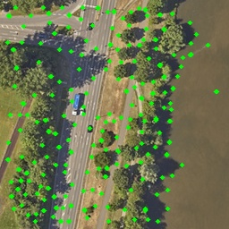
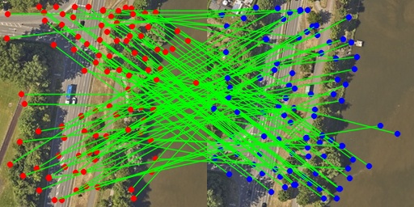

Beyond-The-Code / 超越代码
“The limits of my language mean the limits of my world.” — Ludwig Wittgenstein
“我的语言之限，即我的世界之限。” — 路德维希·维特根斯坦
本仓库收录了我个人在闲暇时间所写的一些关于技术底层、范式演进、哲学人文的思考杂谈，以及在工程实践、硬件部署过程中的技术教程，将其整理成册。
文中所表达的观点与方案仅代表个人在特定时期的探索与认知，未必绝对完美，仅供参考与探讨。
有些想法终究需要落于笔端。无论是关于技术范式的演变、时代浪潮的更迭，还是纯粹的技术笔记，若一直憋在脑海里，便失去了交流与沉淀的意义。
如今市面上充斥着纷繁嘈杂的争論，却鲜有逻辑严密、触及本质的剖析。遂决心整理本仓库，将这些日子关于技术与哲学的沉淀公之于众。
文字一出，便有了自己的生命。不知未来会有多少读者驻足于此，但哪怕这些拙见只能为你带来些许视野之外的启发、促使你重新审视某些习以为常的概念，这也算是我在这个世界上留下一丝微弱但真实的痕迹。若能借此让技术与思想的世界稍变好微芒分毫，我便感激不尽。
程语言范式与计算机哲学史
话题：函数式编程
如果你仔细审视当今技术栈的顶峰，你会发现函数式编程无处不在，它已经成为了诸多框架和语言刻在基因里的概念——不可变数据与闭包。
你可能把这句话都已经听烂了，可变数据会导致状态污染、控制流混乱、导致发生“我这个数据怎么莫名其妙变了”这种问题，听烂了闭包的n种好处。但是抛开这种教条，到底为什么我们需要函数式编程？这中间到底发生过什么？让我们从古到今来复盘一下。
顺着族谱往上找，函数式编程其实根本不是什么现代前端或者Rust的新发明，它的理论根基在1930年代就被阿隆佐·邱奇（Alonzo Church）在普林斯顿大学的黑板上写下来了。那时候连真正意义上的电子计算机都还没诞生。
Lambda 演算
要聊 λ 演算的诞生，我们得把时钟拨回1920-1930年代。那时，整个数学界正处于一场数学危机中，数学家们正在疯狂地寻找数学的终极根基。
起因在于，大数学家大卫·希尔伯特（David Hilbert）在1900年的国际数学家大会上，一口气提出了 23 个著名的数学问题。这 23个问题直接指引了整个20世纪数学家们的奋斗方向，诞生了无数的数学定理，甚至连编程本身，也是从中诞生。
希尔伯特是一个极端的数学理性主义者，他有一句名言刻在了他的墓碑上：“我们必须知道，我们必将知道”。他无法容忍数学体系里存在任何模糊、二义性或者无法证明的东西。于是，1920年代，他进一步提出的一个宏大宏愿——“希尔伯特计划”。提出了一个宏大的计划，想要一劳永逸地为整个数学建立一座坚不可摧的理论体系。他要求这个数学体系必须满足三个条件：
- 完备性： 任何一个数学命题，要么能证明它是真的，要么能证明它是假的。绝对不存在无法确定的中间地带。
- 一致性： 数学体系必须是自洽的，绝对不能推导自相矛盾的结论（比如不能推导出 ）。
- 可判定性： 存在一个纯粹机械化的步骤（算法），只要把任何数学命题丢进去，这个机器就能在有限时间内死板地计算出它是真还是假。这就是大名鼎鼎的判定问题。
如果这个计划成功，数学将变成一门完美的艺术：所有的定理都不再需要天才的灵光一现，只需要交给一个机械工人去推导符号就可以了。
这三个条件，直接导致了三个伟大的发现。
希尔伯特正带着全世界的数学家试图证明这个体系时，1931年，25岁的库尔特·哥德尔（Kurt Gödel）发表了著名的哥德尔不完备定理。
简单来说，哥德尔不完备定理直接证明了完备性的破产，哥德尔证明了。
任何一个自洽的数学体系，一定存在着一些绝对正确，但永远无法被这个体系证明的数学命题。
这给希尔伯特的梦想狠狠地砸了第一锤：数学是不可能完备的。
虽然完备性碎了，但希尔伯特和数学家们想：好吧，就算有些问题无法证明，那我们至少能不能发明一个“算法”，来判定某一个特定命题到底是不是“无法证明”的呢？这对应了第三个条件——可判定性。
为了解决这个判定问题，数学家们必须先搞懂一件事：到底什么叫“算法”？ 当时根本没有计算机，大家对计算的理解都是模糊的。
于是，为了彻底打趴下希尔伯特的幻想，有两个天才在1936年不约而同地登场了，他们各自为计算下了一个严格的数学定义：
- 阿隆佐·邱奇 发明了** 演算**，认为计算就是函数的代入与展开。
- 艾伦·图灵 发明了图灵机，认为计算就是读写头在纸带上的擦擦写写。
后者，是今天一切计算机的老祖宗，而前者，则是函数式编程的老祖宗。
那么，什么是 演算？要一句话说清 演算，就是：“世界上没有实体，只有动作，万物皆是函数。”
在传统的物理世界或图灵机世界里，我们习惯了先有“东西（数据）”，再有“对东西的操作（算法）”。但邱奇的 演算做出了一个极其反直觉但是很数学的假设：我们不需要数据，只需要映射关系本身，就足以表达宇宙间的一切规律。
- 没有数字： “2” 不是一个实体，而是“把某个动作连续做两次”的抽象概念。
- 没有状态： 函数是一个绝对纯净的映射通道。你把东西丢进去，吐出新的东西。在这个过程中，输入的参数绝对不会在原位被污染或篡改。不可变性不是它的特性，而是它的核心假设。
邱奇用他的基础假设和Lambda演算，证明了只要有以下三种语法组件，就能组合出宇宙间所有的计算逻辑：
- 变量： （一个代号，用于指代输入）。
- 函数抽象： （定义一个匿名函数，输入是 ，逻辑体是 。现代前端管它叫箭头函数：x => M）。
- 函数应用： （把函数 作用在参数 上。也就是函数调用：M(N)）。
它的计算机制只有一条：-归约（-reduction）。
说白了就是九个字——变量代入与函数展开。把输入参数代入到函数体里，再像弹簧一样把函数表达式展开、化简，直到不能再简为止。这就是整个 演算的全部运转方式。
邱奇在这个连数字、if-else、循环语句都没有的荒凉世界里，推导出了两个终极结论：
- 结论一：它和图灵机完全等价（邱奇-图灵论题）
通过纯粹的函数组合（比如用函数表达布尔值、用著名的“Y组合子”在没有循环语句的情况下强行实现递归），邱奇证明了：这个只用符号代入的逻辑系统，其计算能力与那个拥有无限纸带、读写头的、精密的物理图灵机完全等价。 这就为后来的函数式编程（Lisp、Haskell）奠定了绝对合法的正统地位——图灵机能干的， 演算全都能干。
- 结论二：机械化的终极判定是不可能的
邱奇利用 演算证明了，你无法写出一个通用的 表达式，去判定任意另一个 表达式是否能被化简到终点。这和图灵的停机问题殊途同归，彻底干掉了希尔伯特想用机械化判定一切数学命题的宏愿（希尔伯特又被无情鞭打）。
图灵机
说到图灵机，每个计算机人都很熟悉，在这里我们再重新复习一下图灵机的三个物理组件。
-
无限长的纸带： 这就是内存。纸带被划分为一个个格子，每个格子存储一个符号（数据）。
-
读写头： 这就是 CPU 的指针和寄存器。它可以在纸带有左右移动，更重要的是，它能擦除当前格子的符号，并写入一个新符号。
-
状态寄存器： 记录机器当前处于什么状态。
在图灵的假设里，计算就是读写头在纸带上的擦擦写写。想进行计算，必须去内存的某个地址上，把原来的值擦掉，改写成新的值。这就是地地道道的“可变变量”。我们今天在面向对象或命令式编程里写的 x = x + 1、obj.age = 18，全都是图灵机在纸带上擦擦写写的现代翻版。
OOP的出现，其实也绝对不是偶然，它就是图灵机模型在工程复杂度爆炸时的必然产物。 甚至可以说，OOP是图灵机在软件工程世界里演进出来的终极完全体。图灵机的核心就是那条纸带和那个擦擦写写的读写头，就是命令式编程的根源。世界上最早的高级语言（如 Fortran、C 语言）全都是地地道道的图灵机翻版。
为了拯救图灵机模型，不让它在复杂的现实业务里崩溃，人类必须想个办法限制读写头的瞎擦乱写。于是，阿兰·凯（Alan Kay，OOP之父）、芭芭拉·利斯科夫（Barbara Liskov）这帮天才提出了面向对象的思想。仔细审视OOP的核心三大特性（封装、继承、多态），它们其实全都是为了给图灵机的可变纸带打补丁。
为什么计算机使用图灵机
历史务实的地方就在于，冯·诺依曼在造物理计算机时，由于当年的硬件极其昂贵，物理学家们用屁股决定也会毫不犹豫背叛邱奇，选择更贴合硬件物理结构的图灵机模型（内存就是纸带，CPU就是读写头）。
于是，原位修改、命令式代码，这些东西统治了工业界半个世纪。而演算则带着它天生不可变，被软件工程打入冷宫，只能在Lisp语言里自娱自乐，甚至被工业界嘲笑是学术玩具。
这主要是因为，在那个世纪的硬件条件下，如果你非要用图灵机的硬件去跑纯演算，因为不能原地改数据，你每次改个属性都得在内存里重新开辟空间、复制一遍数据，当年只有几KB内存的机器根本无法运行任何复杂程序。
函数式编程复兴原因
函数式编程的复兴主要是由于两个变化导致的。
第一个变化是半导体技术达到了上限。在21世纪初人类终于撞上了物理极限，摩尔定律锁死了，单核 CPU 的主频撞到了物理极限。为了让计算机更快，物理学家和工程师们只能开始往一个芯片里塞更多的核心——多核并发时代来临。
这时候，图灵机模型的致命缺陷暴露了。多个核心同时在同一块内存上疯狂擦擦写写，世界瞬间乱套了。为了防止数据竞争，人类不得不发明了锁、互斥量、死锁检测。为了保护那块可变内存，程序员的心智负担直接爆炸。
人类在图灵机的沙盘里修修补补快崩溃时，一回头，突然发现了在函数式编程里躺了半个世纪的 演算。因为 演算天然不可变，数据只能读取不能修改，所以一千个核心同时去读它也是绝对安全的，天然对多核并发免疫。
另一个变化是系统的复杂度变了。早期的程序很简单，内存很贵，原位修改能榨干每一比特的硬件性能。但现代的系统太庞大了。数据在无数个组件、中间件、异步回调里流转。这时候，可变数据就变成了：“我这个状态怎么莫名其妙变了？是谁在哪个旮旯角里悄悄改了我的属性？”debug 变成了玄学。
兜兜转转大半个世纪，软件工程发现，解决复杂度的终极武器，居然是90年前数学家在黑板上写下的、那个连变量和数字都没有的纯粹世界。不管是现代前端的函数式编程、不可变数据、Lambda函数，其归根到底，老祖宗都是90年前的 演算。说到这里顺便插一嘴，其实纯粹的Lambda演算的函数，不能包含内部状态和触发副作用的，在现在叫做“纯函数”。而现在编程语言里的更务实的，能够捕获外部变量和存有自己状态的，有个更响亮的名字——闭包。现在你知道为什么叫Lambda函数而不是gamma或者什么omega函数了吧。
现代函数式编程
现代硬件底层依然是硬件高效的图灵机，但在软件的上层，现代编程语言都正在用演算的核心概念，让程序员能够编写出确定与优雅的程序。由于根上还是图灵机，实现最纯粹的其演算实是很困难的，而且我们也没有必要完全按照最初的演算来编写程序，不然那就太痛苦了。
现代函数式编程语言，从演算里偷来了最核心的几个武器——不可变数据、闭包、代数数据类型、高阶函数复合。变成了你天天看到的这些概念。
- **闭包：**本质上是演算在图灵机上的妥协产物。演算没有状态，而闭包通过捕获自由变量，把环境和动作打包在了一起。
- **不可变数据类型：**本质上是演算的核心假设。在现代主要通过两种方式实现，一种是编译器强制不可变关键字（例如
const）甚至在Rust里，只要不声明可变，就默认不可变；一种是通过结构共享，在可变数据类型上强行实现不可变数据，这就是React的核心，没变的部分用指针指向老数据，变了的部分创建新节点。 - **代数数据类型：**这是现代函数式编程极其重要、甚至可以说是
Rust、TypeScript等语言灵魂的一点，其标志性的体现就是enum。传统OOP依赖开放多态（通过子类继承虚表来分发行为），而函数式编程带来了闭合多态，结合模式匹配，编译器能强迫你必须处理完所有情况才能编译通过。这种闭合带来了类型安全和运行效率。 - **高阶函数复合：**传统OOP要实现功能的组合通常要让对象持有另一个对象的引用。而函数式编程的组合，是数学意义上的函数复合（）。一个函数能够接收函数作为参数，或者能够实现一个，返回函数的函数
因此，你在设计模式中看到的，很多由于现代语言的改进而消灭的设计模式，其实更本质上，是现代函数式编程和演算对于图灵机的胜利。
不存在银弹
软件开发中没有银弹。说完了函数式编程与OOP的爱恨情仇。赞扬了函数编程的优点，那么，函数式编程的缺点是什么？
前面我们说到，演算的核心就是变量代入与函数展开，而一个事物的核心假设与方法，是优点来源的同时，往往也是最大的缺点来源。
缺点一：闭包地狱
在React里有一个被无数人喷过的被叫做“闭包地狱”的大雷，由于闭包的特性，某个异步回调函数或副作用捕获了“过去”的状态，导致它在执行时拿到的依然是旧数据，而不是最新的值。为了引入函数式组件的副作用与缓存，React推出了 useEffect、useCallback 等等一堆API。然而搞笑的是，它们反而转接了代价，变成了闭包地狱最频繁的爆发区。
其本质，是闭包的状态捕获与异步并发之间的冲突。
而在更底层的语言里，这个问题变得更加致命。单单是所有权机制和异步就已经开始产生了排异反应。
由于Rust 经常会发生所有权转移，把一个Future传给另一个线程、或者放进一个Box里。为了解决异步并发导致的内存移动产生空指针，Rust 引入了 Pin。Pin<P> 的本质是在内存中把这个对象“钉住”。一旦一个 Future 被 Pin 住了，Rust 就保证它再也不能在内存中被移动。这样，它内部的自引用指针就永远是安全的。
Rust闭包与其他语言也不同，在Rust中闭包也有一个move关键字。在没有所有权的语言中，闭包对外部变量的捕获一般是全自动且悄无声息的，一律通过引用计数挂在堆上。但Rust的闭包非常节约，能用借用就绝不用所有权。但如果你的闭包生命周期比它捕获的变量还要长，借用就会失效，导致编译报错，这时候你就必须在闭包前加上 move。
而当Rust里的异步和闭包撞上，就会发生巨大的核反应。
如果捕获的变量已经在外面的函数里被销毁（Drop）了，但异步任务还在另一个线程里哼哧哼哧地跑，这时候去访问那个变量，不就成了野指针吗？而Rust设计的目标就是根除空指针的存在，这可怎么办？
为了让异步任务能安全运行，你必须使用move关键字。
#![allow(unused)]
fn main() {
let local_data = String::from("重要数据");
// 加上 move！把 local_data 的所有权彻底剥夺，转移进异步任务内部
tokio::spawn(async move {
// 此时这个数据完全属于这个异步任务了，它爱活多久活多久
println!("{}", local_data);
});
}回到React闭包地狱的本质，其根源是同一个变量，外面在变，闭包里拿的是旧的，从而产生了冲突，React创造了useEffect。而Rust的move机制直接从物理上消灭了这种冲突的可能性。
但代价就是，一旦被捕获，外面的世界就彻底失去它了。因此如果你既想把数据传给异步任务，又想让外面的代码继续用，该怎么办？只能拷贝。
这就是第一条代价：拷贝地狱。
更进一步，如果数据不仅要被多个异步任务共享，而且这些任务都想修改它，那你必须保证线程安全。
这就是第二条代价：Arc<Mutex<T>>地狱。
缺点二：丧失的多态拓展性
代数数据类型与模式匹配很好的解决了绝大部分OOP继承需要的场景。唯独只有一条没有解决——扩展性。这在计算机科学中被称为“表达式问题”。
以最典型的UI树为例。利用开放多态（继承），可以很好的描述一个UI的树结构，这已经在OOP中得到了大量的应用，我们不再赘述。
在现代的闭合多态语言中，利用代数数据类型与接口，我们也可以实现同样的功能，因此可以写出这样的代码来描述一个树形结构。
#![allow(unused)]
fn main() {
// 用代数类型穷尽节点的所有可能性（闭合多态）
#[derive(Debug)]
pub enum UIWidget {
Button { text: String },
Text { content: String },
Panel { children: Vec<UIWidget> },
}
impl UIWidget {
// 统一的行为方法，内部通过模式匹配（Pattern Matching）分发逻辑
pub fn draw(&self) {
match self {
UIWidget::Button { text } => {
println!(" [渲染按钮]: {}", text);
}
UIWidget::Text { content } => {
println!(" [渲染文本]: {}", content);
}
UIWidget::Panel { children } => {
println!("[开始渲染面板] ->");
// 一视同仁地向下递归遍历
for child in children {
child.draw();
}
println!("<- [面板渲染结束]");
}
}
}
}
}但是——这里的关键是代数类型是一种封闭的多态，如果要添加新的UI组件，必须更改整个代数类型，这意味着，如果你在写一个通用 UI 框架，麻烦就大了。如果用户想自定义一个自己的组件并塞进框架的容器里，他们根本无法做到！因为他们没有权限去修改框架源码的enum类型，而且增加一个新的类型，意味着要大动干戈地修改原有的枚举定义，并且所有 match 它的地方全都要改一遍。这对框架设计来说是毁灭性的。
有很多框架采用了一种讨巧的方式，比如SwiftUI或者Slint等，将修改结构后需要更改源代码的问题，交给了编译器来自动化工作，让你写起来感觉有开放多态的好处，但是实际上运行时却没有OOP的开销和问题。但这往往导致编译器报错出来的类型会嵌套几十层如同天书，同时也无法良好的支持热重载。
而OOP是开放多态，从不假设数量。这就导致了一个天然的结果——OOP天然就是适合用来组建真正的UI树。很多UI框架早以证实了这一点，Flutter、早期的React（实际上React现在也是，虽然代码里不是，但是JS天生就是弱类型多态的，这只是一种不需要开放多态的幻觉，如果用纯粹、严格的函数式静态语言去写，就会立刻撞上这堵南墙），源代码里都是OOP。
或许你有很多的方法仍然可以绕着来实现这样的开放多态，但是绝对不会优雅，最终你会发现自己绝对又结合类型擦除，重新实现了OOP中的虚表。
或许有朝一日，如果我们能够用另一种继承之外的，更好的方式来实现开放多态，这个问题就能够解决了。
缺点三：复合地狱
最后一点则是函数式编程里臭名昭著的套娃地狱。例如Rust的迭代器不仅链条长，最致命的是Rust编译器的类型推导。这一长串下来，中间任何一步的借用或所有权搞错，编译器就会抛出一个长达两页纸的、夹杂着类似 Filter<Map<Filter<Iter<...>>>> 的超长泛型报错，直接把人看瞎。
#![allow(unused)]
fn main() {
let top_users: Vec<String> = users
.into_iter()
.filter(|u| u.age >= 18)
.map(|u| u.name)
.filter(|name| !name.is_empty())
// 为了去重，得先收集到 HashSet，再转回迭代器（因为迭代器本身没有 dedup）
.collect::<std::collections::HashSet<_>>()
.into_iter()
.take(3)
.collect();
// 哦等等，还要排序？迭代器没有 sort()，又得 collect 出来排，再处理……
}正如人月神话里说的，软件开发中没有银弹。其实这句话放到编程语言里也是相同的。没有一种编程风格能够解决所有的设计问题。很多人误以为函数式编程比OOP更加优美，是因为他们只看到了高阶函数在字面上的简练。真正的函数式编程之所以敢如此自由传递和嵌套函数，是因为它强制要求函数是“纯”的。但我们在前端、在Rust、在Go里用的，大多是多范式语言而不是真正的纯粹的函数式语言。因此，硬币的另一面就是：自由的代价往往就是混乱。
补充
Lisp是第一门函数式编程语言。Lisp是世界上第二古老的高级语言（仅次于 Fortran），由人工智能之父约翰·麦卡锡（John McCarthy在1958年发明。他的特点是万物皆是列表，万物皆是函数。Lisp是现代所有动态语言（包括 JavaScript）的老祖宗。它是第一个引入闭包（Closure）、高阶函数、垃圾回收（GC）机制的语言。
Haskhell是一门把函数式编程发展到极致的编程语言。是为了实现“绝对纯粹的邱奇理想国”而打造的语言。它是以逻辑学家哈斯凯尔·柯里（Haskell Curry，柯里化Curry思想的提出者）的名字命名的。他的特点是，极端的纯粹与不可变，在 Haskell 里，“可变变量”这个概念是被彻底物理消灭的，它把 = 理解为数学上的等价定义，而不是图灵机的赋值。Haskell 引入了极其强大的静态强类型系统。之前在设计模式里感受到的代数数据类型和模式匹配，其现代工业界的终极源头就是Haskell。
话题：元编程
要讲元编程，就必须先弄明白什么不是元编程，“元”到底指的是什么。
让我们把思维从日常的写代码里抽离出来，站到一个更高的抽象维度去重新审视，那个你一直在写但从未考虑过的问题：“代码本身到底是什么？”
代码的本质
每天，程序员坐在电脑前敲下 if (user.isAdmin)、list.map(x => x * 2)，或者封装一个用户类、写一个数据库连接池，这些通通不是元编程，这些应该叫做，业务编程或者一阶编程。
在这种模式下，代码本身决定的是具体的数据结构与控制流程，而用户输入的数据是被推上流水线的原材料。代码像一个加工厂，日复一日地吞进去数据，吐出来新的数据。
在计算机科学的终极圣殿里，有一条定理，叫做“柯里-霍华德同构”。
它用严密的数学逻辑证明了一件事**：代码的本质，就是数学证明。**这个定理表明，类型本质上就是数学里的命题，函数本质上就是对这个命题的数学证明。
当你写下一个函数 function add(a: number, b: number): number 并让它顺利通过编译时，其实不是在写一段机械的指令，而是在向计算机推导一个数学定理：“已知存在两个数和，我可以通过以下步骤，证明必然能通过函数体内的流程来构造出第三个数。”只要代码能跑通，就意味着你的证明成立，命题就为真。
元编程的本质
还记得我们之前说，希尔伯特的判定问题指的是：存在一个纯粹机械化的算法，只要把任何数学命题丢进去，这个机器就能在有限时间内死板地计算出它是真还是假。而这个机器，其实就是我们天天在用的计算机。
“元”一词在希腊语里有“超越”、“在……之后”的意思，这个词还广泛用在其他领域，例如心理学上有“元认知”，是一个人对自己的认知能力；数据科学里有“元数据”，是用来描述数据的数据，比如描述一副图像的各种参数等等。
现在我们可以指出，我们之前写的业务代码，就是在编写一个命题，写代码的过程就是去证明我们的逻辑和结论为真的过程。而元编程，是去写出一个“能够证明一个证明为真”的程序。在这种情况下，一个证明本身就成为了一个命题。
这么说可能有些拗口，“证明一个证明”是什么意思呢？既然我们说写代码是证明，那么其实简单替换一下就可以得到更容易理解的概念：元编程，是写一段程序，让这个程序输出另一个可运行的、正确的程序的过程。
希尔伯特的判定问题，以及图灵的图灵机停机问题，如果用现代软件工程的语言来翻译，就是“试图寻找一个万能的、全知全能的元编程程序”的问题。
图灵提出，是否存在一个万能的判定程序 ，当你把任意一个程序 和它的输入 传给 时， 能够百分之百准确地告诉你，程序 是会运行结束（停机），还是会陷入死循环？
这个 ，在定义上就是一个地地道道的、最顶级的“元编程程序”，。如果它存在，它就拥有了超越一阶代码的“上帝视角”，能够看穿所有世间代码的宿命。它要吃进去的原材料不是别的，正是另一段程序的源代码。它的加工逻辑是去分析这段源代码的控制流，它的输出是一个布尔值（true 或 false）。
元编程是极其强大的武器，能够轻而易举做到普通编程根本无法做到的事情。在现代语言里，语言本身主要使用反射与宏，来实现元编程。
运行时元编程—反射
反射是很多程序员进阶路上最大的一只拦路虎，甚至是编程生涯的终点。
很多人天天都在用它（ JSON 序列化工具、用 Spring 的注解、或者在前端用Vue3/MobX），但如果你问：“到底什么是反射？它反射了什么？”，绝大多数人都会卡壳，往往只觉得它很高级、很神秘，能搞出一些魔法，但底层的逻辑却是一片浆糊。
要弄懂反射，必须先明白这个词是怎么来的。它其实是一个非常精妙的物理隐喻。
在物理世界里，反射是一束光打在镜子上，折射回你的眼睛，让你看清了你自己的模样。
在编程语言里，反射是代码在运行的时候，突然停下来，转过头去对着镜子晃一下，审视自己、观察自己、看清自己的代码结构。这就叫做运行时的“自省”。
所以，反射，就是程序在运行期“照镜子”自审的能力。 它反射的不是别的东西，正是一个程序自身。
说到这里可能还是很抽象，一个程序看自身是什么意思？让我们看的更本质一些。
为了明白为什么需要反射，我们必须回头看看你写下的代码，是怎么编译的。
当你写下这些定义：
class User {
public name: string;
private age: number;
public deleteDatabase() { ... }
}
对于人类来说，这个类结构清晰，有属性、有方法、有私有共有权限。这些定义一目了然。
但是，当编译器把这段代码编译成机器码或者字节码、放到内存里去运行的时候，计算机只认识内存地址和偏移量。在物理内存里，这个 User 对象最后可能被简化成了仅仅是一块 16个字节的连续内存空间。前8个字节存 name 的指针。后8个字节存 age 的数字，你在代码里所有的访问和调用，全都变成了指针和地址。
这时候，如果你突然产生了一个需求：“我想写一个万能的工具，用户传进来任意一个对象，我都能自动把它变成JSON字符串吐出来。”如果没有反射你根本无法做到。因为程序在运行的时候，根本不知道前8个字节的名字叫做什么，后8个字节的名字叫做什么。
为了解决这个痛点，现代支持反射的语言（Java、Go、C#、JavaScript）的编译器，做了一件额外的事情。它们在编译和加载代码时，没有把这些类型和字段数据删除，而是偷偷藏了一份每个函数和对象的字段和参数记录。
以TS为例，当你启用编译器的反射功能，并且引入反射库。
{
"compilerOptions": {
"experimentalDecorators": true, // 开启装饰器
"emitDecoratorMetadata": true // 核心：允许编译器在运行时吐出类型元数据
}
}
import "reflect-metadata";
假如你拥有一个巨大的Map，其中key是类型，而value是对应的数据。
// 假设这是我们的大 Map，里面存着系统运行所需的各种基础服务
const container = new Map<any, any>();
// 往大Map里塞点原材料
class ApiService {
fetchData() { return "从服务器捞出的核心数据"; }
}
class LoggerService {
log(msg: string) { console.log(`[日志]: ${msg}`); }
}
container.set(ApiService, new ApiService());
container.set(LoggerService, new LoggerService());
TS有个设定，只有被装饰器修饰的类或方法，编译器才会配合地保存这个类或方法的参数和类型信息。所以我们先写一个最简单的装饰器，哪怕它什么都不干。
// 这是一个空壳装饰器，单纯为了告诉 TS 编译器
function Injectable(): ClassDecorator {
return (target) => {
};
}
现在，我们要写一个万能的自动实例化函数 resolve。它会去照镜子（反射），看看目标类需要什么参数，然后从大 Map 里捞出来塞进去。这里的关键是，由于在之前引入了import "reflect-metadata";，这个库会在全局的Reflect对象上添加一个getMetadata方法，其本质其实是一个巨大的WeakMap。利用这个方法，你可以获得一个含有当前对象元数据的数组。
function resolve<T>(target: new (...args: any[]) => T): T {
// 核心反射：向 Reflect 索要这个类的构造函数参数类型图纸
// "design:paramtypes" 是TS内置的key，用来获取参数的类型数组
const paramTypes: any[] = Reflect.getMetadata("design:paramtypes", target) || [];
console.log(`[反射自审]: 发现类 ${target.name} 的构造函数需要 ${paramTypes.length} 个参数。`);
// 打印出来的 paramTypes 看起来像这样：[ [class ApiService], [class LoggerService] ]
paramTypes.forEach((type, index) => {
console.log(` 参数 ${index + 1} 的类型是: ${type.name}`);
});
// 现在你可以根据类型参数，从刚才的大Map里捞出对应的依赖
const dependencies = paramTypes.map(type => {
const dependency = container.get(type);
if (!dependency) {
throw new Error(`找不到依赖的类型: ${type.name}，请先塞进大 Map 中！`);
}
return dependency;
});
// 把捞出来的参数作为构造函数参数塞进去，返回新实例
return new target(...dependencies);
}
现在我们写一个业务类 UserController，它假装自己不知道参数怎么来，只管伸手要：
@Injectable() // 打上标记，让TS编译器保存参数
class UserController {
// 声明我需要 ApiService 和 LoggerService，参数数量：2
constructor(
private api: ApiService,
private logger: LoggerService
) {}
public handleRequest() {
this.logger.log("开始处理用户请求...");
const data = this.api.fetchData();
console.log(`[控制器响应]: ${data}`);
}
}
// 我们不需要手动 new UserController(new ApiService(), new LoggerService()) 了
// 直接交给 resolve 函数，它会通过反射自动组装
const controller = resolve(UserController);
controller.handleRequest();
这个例子，本质上就是我们在创建型模式里讨论的依赖注入的最简单实现。在其他语言里，比如Java，Go，同样也需要用到反射，才能够实现依赖注入。这是因为依赖注入必须有一个前提，必须能够让程序知道“这个类或者函数接受几个参数，每个参数的类型是什么”。要知道这些事情，就必须使用反射。
但是，你发现他的代价了吗？
第一，它是不纯粹的。JS语言本身根本不支持这种类型的反射，我们必须在语言外层加一套特殊的编译器开关（emitDecoratorMetadata）并引入一个reflect-metadata库。
第二，它必须依赖装饰器（@Injectable）这个语法。如果程序员忘记在类名上加这行注解，反射机制当场就会变成瞎子，什么参数也捞不出来，在运行时直接导致程序崩溃。
这种在运行时“编译时留额外信息、运行时再翻来翻去查找”的方案，正是元编程在运行时流派的工程妥协。这也正是为什么，更硬核的现代语言，会抛弃运行时的反射，直接转入编译期的阵营。
编译时元编程—宏
宏的发展史是一个极其精彩的屌丝逆袭故事，它一开始根本不是什么高大上的元编程神器，而是一个纯粹的打字机语法糖。
宏最早可以追溯到汇编语言时代和C语言时代（#define）。那时候，由于硬件内存极小，连函数的调用开销（压栈、出栈、保护现场）程序员都斤斤计较。于是，大家想：能不能发明一个东西，让我少写点重复代码，但在编译前自动帮我把代码复制粘贴过去。
这就是文本替换宏。在这个阶段，宏根本没有智商，它不认识什么是类型，不认识什么是语法，它就是一个纯粹的字符串替换工具。因为这种呆板设计，早期的宏制造了无数难以调试的Bug，被现代面向对象语言（Java、C#）视作毒瘤，直接在语言设计中被彻底开除了。
然而，当程序员陷入了“运行时的无限套娃”和“反射的沉重代价”中感到毫无办法时，宏最终又被拾起来重新发现，并且在系统级语言里完成了屌丝逆袭。
现代的宏（以 Rust 的过程宏 为代表）彻底进行了全面升级，它不再是盲目的文本替换了，而是直接跟编译器深度合体，直接获得了接触抽象语法树 的最高权限，变成了指挥编译器的工具。
在动态类型和Java或者C#这种字节码语言里主要依靠反射，而宏主要在真正的硬核编译型语言里大行其道，并且分为好几个流派。
流派 A：Rust的“编译魔法”——过程宏
这个流派的观点非常直白粗暴简单有效，既然元编程是改写代码，那就干脆在编译器内部开一个后门。
当你写下#[derive(Serialize)] 时，编译器在编译你的核心代码之前，会先去跑一段由你编写的元编程程序。这段程序吃进去的是你当前结构体的Token流，在内存里重组语法树，然后吐出全新的Rust代码。
这种流派是纯粹的语言内解法，非常安全，类型系统和生命周期检查全部无缝覆盖。但代价是编译速度极慢，因为你编译一个程序，实际上等于先编译并运行了十几个“生成代码的程序”。
流派 B：UE5（虚幻引擎）的“重工业魔改”——外部编译器
C++天生是没有现代反射和元数据的，但在游戏开发中，对象的序列化、GC、蓝图与C++的动态绑定又必须依赖反射。Epic官方一看，指望C++标准委员会扯皮完（C++标准委员会是这样的），黄花菜都凉了，于是他们采取了最暴力的重工业手段：不和委员会玩了，自己给 C++ 编译器写个外挂壳子。
这就是UHT（虚幻请求头工具）。当你在UE5里写下 UCLASS()、UPROPERTY() 时，原生的C++编译器根本不认识这些宏。在真正的C++编译器启动之前，UE的UHT会先跑一遍，把你的整个 C++ 源码文件肉眼扫描一遍，强行解析出你的类结构。UHT会在幕后自动生成一堆巨庞大的、极其恶心的 .generated.h 和 .gen.cpp 文件，帮你在C++里强行手写出了一套元数据。最后，再把这些生成的代码和你的源代码一起喂给标准的C++编译器。
这种流派直接降维打击，在不支持反射的语言里，硬生生用重型工程手段造出了全套反射基础设施。但是极度依赖虚幻自己的构建系统，编译链条极长，一旦代码写错，引发的报错信息简直是天书。
流派 C：Zig语言的“超级杀招”——comptime关键字
Zig 语言走了一条让所有人惊掉下巴的纯粹路线。不发明宏也不发明外部工具，而是在编译期直接运行正儿八经的Zig代码。这就是Zig被无数人赞扬的超级大招——comptime 关键字。
在Zig里，你想写一个万能的、支持任何类型的泛型容器，不需要写复杂的泛型语法或宏，你直接在编译期写常规代码。直接把类型当作变量给当作函数的输出给返回出去。
// 这是一个函数，输入是一个类型，输出是一个结构体新类型！
fn List(comptime T: type) type {
return struct {
items: []T,
len: usize,
};
}
// 使用时：
const IntList = List(i32); // 在编译期把 i32 类型传进去，直接生成一个新的结构体！
在Zig语言里，类型天生就是编译期的一等公民。你可以像操作普通的数字、字符串一样，在编译期用 if-else、for 循环去组装这些类型。它不需要任何特殊的宏语法，日常怎么写业务逻辑，就怎么写元编程。编译器在编译时，会把标有 comptime 的代码直接在内嵌的解释器里跑完，把结果固化成极其干净、零开销的机器码吐出来。
流派 D：现代语言的“隐藏元编程”——泛型
泛型在计算机科学的严谨定义下，其实也是“元编程”最基础、最优雅的一种形态。
当你编写fn swap<T>(a: &mut T, b: &mut T)这样的函数时，你并没有编写一段具体的机器码。你是在编写“编写代码的逻辑”。所以，泛型本质上就是一个“代码生成器”。编译器替你完成了繁琐的“代码复制粘贴”，这就是最高效、最安全、最易用的元编程。Zig语言其实就是把这种“泛型即元编程”的本质给彻底释放出来，并且把泛型的地位进一步提升了。
成也萧何，败也萧何
在前面我们说到了zig语言最神奇的地方，把类型当作可以运算的变量来在编译器期间运行生成结果，看似一切都很美，那么代价是什么？
让我们来抛开现象看本质，zig语言的comptime到底是什么？
在话题函数式编程中我们长篇铺叙了图灵机与 演算的历史，不知道你是否能发现一些端倪。
当我们写下泛型HsahMap<String,Vec<Vec<usize>>>时，其实这就是最纯正的 演算，类型就是我们的输入，泛型的嵌套就是函数的嵌套。
因此Rust社区才能利用泛型构造出泛型常量，当你在nalgebra库中使用U2,U3这样的泛型常量时，其实就是在用 演算去模拟真正的次数计算。
那么，zig语言的comptime是什么？
显然，他就是一个完整的用来计算类型的图灵机，具备了图灵机便于使用简单直观的优点的同时，也背负了图灵机所有的缺点。
- 图灵停机问题：图灵证明了，对于一个程序，不存在任何一个程序只需要看源代码，就能够推导出这个程序是否会在有限时间内终止。这里的程序，就是Zig编译器本身。换句话说，对于
comptime中的内容，Zig编译器永远也不能希望靠纯粹的代码检查就能判断comptime中的内容会不会卡死编译器，这对Zig语言的语言服务器提出了巨大的挑战。 - 复杂度爆炸：自由是混乱的源泉。相比 演算，图灵机的灵活性实在是太大了，一旦不加任何对于
comptime的限制，comptime中的内容最终必将会成长为谁也看不懂的混沌巨兽。 - 并行：当
comptime碰上并行，所有之前在图灵机中的出现的竟态问题，都会重新以更复杂的状态出现在comptime中。
解决方法也很简单，必须对自由的comptime加上严格的函数式限制，例如不可变量、纯函数式编程….
comptime的特性使得Zig的编译器和语言服务器复杂度暴增，Zig必须在正式编译之前，把所有的comptime运行一遍才能知道真正的结果，这就意味着Zig编译器必须内置一个微型解释器来运行这些代码。同时，这也意味着这对于类型检查、代码补全、代码跳转等功能是毁灭性打击。
成也萧何，败也萧何。Zig语言的未来还长路漫漫。
最大的元编程程序—编译器
其实某种意义上来说，编译器，就是最大的元编程程序。
在前面我们说，元编程，是写一段程序，让这个程序输出另一个可运行的、正确的程序的过程。那么按照这个标准来看，我们前面讨论的方法，都局限在这两个程序都是一种语言上。但是只要我们允许这两个程序可以不是一个语言，那么我们实际上就可以顺理成章得到一个结论——编译器，就是最大的元编程程序。
我们在前端创造了各种DSL语言，JSX也好Vue也罢， JSX和Svelte的编译器，本质上就是一个“语法翻译层面的元编程”。当你写下 <div/> 时，你不是在写JS，你是在写一种元编程语言。编译器这个最大的元编程程序，在构建阶段接管了你的代码，它把你的语义描述通过AST重写，转换成了指令式的、低层级的DOM操作，让你能够一行代码顶原来的十行代码。
一个编译器的里程碑事件，就是让这个语言的编译器，也是用这个编程语言写出来的。在计算机里这叫做自举。这就是元编程的闭环。在这个闭环里，编程语言变成了一种能够自我复制、自我进化、自我增殖的生命体。
但是，这种进化是永无休止的吗？
显然，图灵和邱奇已经证明了，编译器不是万能的，不管如何进化，也不可能进化出理想的终点——能够解释万物终极真理判别器。那么，如果我们彻底超越编程与代码的边界，去看看那个真正孕育了计算机的母体呢？
话题：超越编程
让我们把话题推向逻辑和理性终点，在编程之外，超越编程之外的世界是什么样的？
让我们把视野拉的更高一些，当程序消失，当计算机消失，甚至连物理世界也消失，我们还剩下什么？
符号主义
早在 17 世纪，戈特弗里德·威廉·莱布尼茨（Gottfried Wilhelm Leibniz）就提出了一个想法：能不能发明一种通用特性语言，把人类世界所有的思想、争论、逻辑，全部简化为纯粹的符号和算术？这样未来如果两个人发生争论，他们不需要面红耳赤地吵架，只需要拿出纸和笔，说一句：“让我们来算一算！”，通过符号推导就能得出谁是对的。
这就是符号主义创世起点。莱布尼茨在三百年前，就已经在脑海中构思了“逻辑代数”的蓝图。在他眼里，思考就是计算，理性就是符号的重组。
顺着莱布尼茨的火种，历史走到了 20 世纪初。逻辑学家们不满足于仅仅把符号当成工具，他们发起了一场更加激进的圣战：证明整个数学，本质上都只是逻辑学的一个分支。
罗素和怀特海为了实现莱布尼茨的梦想，硬生生写出了三大卷、重达数公斤的宏篇巨著——《数学原理》。这本书枯燥、严密、纯粹到了非人的地步。在这套完全由符号构筑的冰冷世界里，他们花了整整 362页的符号推导，才终于在数学上严格地证明了一个在我们看来是废话的命题：。罗素定义了什么是0，什么是1，什么是加法，然后用极其严密的逻辑符号去证明和定义了2。
为什么当年那些大哲学家要搞这么复杂来证明看似这么简单的问题？
因为越是简单，反而越是困难。
罗素搞得这么复杂，就是为了向全世界证明：不需要依赖任何关于数字的直觉，我只用纯粹的逻辑概念（集合、属于、并集），就能凭空推导整个数学。
那么，到底什么是符号？什么又是符号主义？人类为什么非要用符号不可？
在普通人眼里，符号只是键盘上的 + - * / 或者代码里的字母。但在哲学和数学的底层，符号是人类用来驯服无限宇宙的唯一武器。
在逻辑哲学里，符号的本质，是人类理性对现实世界进行的一种“极高层次的抽象”。
现实世界是极其沉重、复杂且充满杂质的。比如，你眼前有“两头健壮的牛”，有“两个红苹果”，还有“两颗正在坍缩的恒星”。物理世界里的牛会生病，苹果会腐烂，恒星会熄灭，它们太重了，人类的大脑根本无法直接把它们塞进思维里去运算。于是，人类发明了符号。 人类把牛、苹果、恒星里那个共同的、抽象的本质抽出来，脱掉所有的水分和实体，变成了一个毫无具体意义的符号——2。
有了符号，就诞生了符号主义，它的底层核心假设只有一句话：“人类的认知本质上就是计算，而计算本质上就是符号的操纵。”
符号主义坚信，宇宙的底层逻辑是一套巨大的、由公理驱动的形式系统。在这个系统里，不管是数学（如皮亚诺的后继符号）、逻辑（如真与假），还是人类的思想、语言，都可以被彻底拆解为离散的符号。你不需要去物理世界里看牛和苹果。你只需要制定一套严格的符号规则。只要你按照规则，把符号 变成符号 ，再变成符号 ，只要推导过程不违背规则，你在纸面上演算出来的结论，就必定是物理世界的终极真理。
我们为什么要用符号？因为符号是人类跨越心智带宽限制来认识和改造世界的工程手段。
自然语言是充满二义性和模糊性的。如果用自然语言去推导真理，逻辑链条稍微拉长，就会因为语义的妥协而彻底崩塌。罗素的著作《逻辑与知识》，就是在研究如何用一套严密的符号去创造一门精确的语言。
一旦现实世界被符号化，真理的推导就变成了一套刻板的、机械的符号替换游戏。这时候，思考这个动作，就被彻底降维降格成了体力劳动。 既然是体力劳动，人类就可以把这个开销转嫁出去——在三百年前转嫁给纸笔，在今天转嫁给图灵机，也就是计算机。
人类的寿命和肉眼是有限的，但数学和宇宙是无限的。你怎么去证明“所有自然数都满足某个规律”？你不可能把无限个数挨个试一遍。 但符号主义可以通过数学归纳法（皮亚诺第五公理），用区区几行符号的推导，把横跨到宇宙终点的无限个数字，一网打尽。
可以说，不管是数学家写下的每一行公式和证明，还是程序员写下的每一行代码，每天面对的，就是这样的一个由各种符号组成的世界。
逻辑哲学
既然有了符号，我们开始玩起了符号的游戏，那么在这场游戏里，我们天天挂在嘴边的逻辑，本质到底是什么？
在这里，我们直接请出 20 世纪最伟大的天才哲学家——路德维希·维特根斯坦（Ludwig Wittgenstein）。
很多人（包括很多程序员）觉得逻辑是人类大脑里“正确思考的指南手册”。
但维特根斯坦在全书的开篇，就直接颠覆了这种唯心主义的幻觉。
-
世界是所有发生的事情。
-
世界是事实的总和，而不是事物的总和。
什么叫“世界不是事物的总和，而是事实的总和”？在计算机和现实世界里，根本没有孤立存在的“苹果”、“内存”或“用户”（这些只是事物）。世界是由“苹果在桌子上”、“指针指向了0x001”、“变量 x 等于 1”这些事实构成的。
那么，逻辑是什么？维特根斯坦给出了如同神谕一般的定义：
- 我们在语言中不能表达任何违反逻辑的东西，就像在几何学中不能用坐标来表现一个违反空间定律的图形，或者给出一个不可能的点的坐标一样。
- 逻辑充满了世界：世界的边界也就是逻辑的边界。
逻辑，本质上根本不是什么高深的思想工具。
逻辑就是允许事实能够发生、能够被组合、被陈列的“底层网格”，是世界的“脚手架”。如果没有逻辑这个底层脚手架，世界上的事实根本无处挂载，就像没有内存的网格和语法规则，代码里的变量和数据流根本无法存在一样。
既然逻辑是世界的脚手架，那么逻辑命题的底层真相是什么？
-
逻辑的命题都是同义反复。
-
因此逻辑的命题什么也没有说。
什么叫“同义反复”、“什么也没有说”？
举个例子：
- 命题 A：“外面正在下雨。”（这句话传达了新信息，它可能是真，可能是假。）
- 命题 B：“外面要么在下雨，要么没在下雨。”（这句话在逻辑上永远正确，是个真理。）
但维特根斯坦说：命题 B 作为一句绝对正确的逻辑真理，它告诉你任何关于天气的新知识了吗？没有。它在物理上一文不值。
这就是我们写代码的真相。
我们在代码的世界里写下了成千上万行严密的逻辑推导，我们用泛型和控制流卡死了每一种可能。编译通过的那一刻，我们欢呼雀跃，觉得自己创造了真理。但维特根斯坦告诉我们：**你的代码什么也没有说，它只是一场宏大的、在编译期完成的“同义反复”。**喂给编译器的输入，和编译器吐出来的输出，在逻辑的物理天平上，重量是完全相等的。逻辑没有创造任何新东西，它只是用一种绝对严密的符号游戏，保证了“输入”到“输出”的等价交换。逻辑的本质，就是一场绝对不会出错的、巨大的符号变换。
程序员们每天打交道的代码（if-else、变量名、类名），本质上就是这套玩了三百年的“符号脱水游戏”。用符号把沉重的现实业务脱水成轻量级的代码，在计算机里疯狂运算。
超越编程
从莱布尼茨的通用语言，到罗素362页的符号圣战，再到维特根斯坦给世界布下的逻辑网格，人类用三百年的时间，把现实世界脱水成了纯粹的符号与逻辑。
现代程序员，其实正是这门最古老学派的事实缔造者。我们用代码在物理的硅片上，用符号和逻辑，筑起了人类历史上最庞大、最精密的逻辑巴别塔。
但维特根斯坦在理性的终点拉住了我们。他告诉我们：
-
对语言的边界，就是世界的边界。
-
对于不可言说之物，必须保持沉默
符号和逻辑能捕获的，仅仅是那个被“脱水”的事实世界。而超越编程之外的——那些关于生命的痛苦、美、爱、以及存在本身的意义，它们无法被写进 if-else，无法被封装进类与函数，它们属于那片“不可言说的领域”。
程序员们用尽一生的逻辑去编写程序，去穷尽这个符号世界的所有可能。而当我们终于合上电脑、抬起头，望向窗外真实、充满不确定性的复杂世界时，才会发现超越编程之外的，是那些代码无法触及的生命色彩，对于这些我们能做的，只有带着最深的敬畏，保持沉默。
AI时代的编程
话题：编程是什么
我应该算得上是最后一批，在AI出现之前开始学习计算机与程序设计的人之一，在我这一代，社会经历了巨变。如今我的学弟学妹也好，学长学姐也罢，好似大都已经很少再已经自己手动编写代码了。
在之前的技术漫游中，我详细的从更宏观的哲学与历史角度讲述了编程这件事的前世今生与意义，而这里，我还想再提一下这些事，不过这次，我们从更微观的个体来说吧。
编程对一个具体的人而言，到底意味着什么？是一份枯燥的工作？是一份令人折磨的负反馈循环？是一场高能耗的大脑思考风暴呢？
对绝大多数人而言，编程确实只是一份枯燥的工程劳作。就这种层面而言，程序员们自称码农，这是因为在绝大多数时候，编程的确早已脱离了创造性。高度完善的开发框架、标准化组件、成熟的语言规范以及早已固化的业务范式，将绝大多数人每天的工作重塑成了一场填空游戏。
**这是工业主义在软件领域的伟大胜利，却也是个体创造力的丧失。**工业化工程的终极目标，就是通过极其严密的抽象与规范，尽可能抹平每一个开发者的个体差异与个人风格。它成功让数千人的大规模协作不再走向无序与混乱，但代价是，它把程序设计变为了可以被高度标准化取代的业务搬砖。
对绝大多数人而言，编程也确实只是一份折磨人的负反馈循环。代码并不是创造的工具，而是层层叠叠的枷锁。它是完全搞不懂的空指针、段错误、并发冲突、数组越界、参数错误，是无休止的兼容性问题与改不完的业务需求。在长达 99% 的时间里，程序都处于编译错误无法运行的失败状态，人要在这个过程中忍受着极其密集的挫败感与挫折。这种无休止的折磨，让许多人最终筋疲力竭，只希望快点拿到结果，逃离这充满报错信息的折磨。
对极少数人而言，编程是一场令人沉醉的高能耗思考风暴。是 99% 的失败与折磨，构成了另外 1% 绝无仅有的成就感。当你在无序的混乱中，凭借纯粹的烧脑逻辑在大脑里构建出极其复杂的抽象模型，在最终跑通程序的那一愣神间——那种瞬间降临的秩序感与支配感，让许多人误以为自己触碰到了神明视角，以为自己成为了这个程序数字宇宙唯一的创世神。
但是，这不过是一场极其深刻的幻觉。**代码其实什么都没有说，也什么都没有创造。**那些看似神奇的算法、优雅的架构、严密的类型系统，在逻辑的天平上，只是一场极其庞大、绝对精准的同义反复。喂给编译器的输入，早已决定了所有的输出。CPU上飞速运行的程序，不过是人类用了三百年的符号游戏。
代码本身是没有生命的，也没有创造任何新的东西，它只是一堆冰冷的、不具备任何倾向与温度的绝对等价的符号演绎。而真正的成就感与意义，从来不在于代码本身，而在于写下代码的那个人。是人将现实世界沉重的业务与思考抽象成了符号，是人是人在最终跑通程序的那一刻，赋予了电路上的电信号以意义。
代码只是一场冰冷的符号游戏，而人，才是这场游戏里最核心、最不可替代的灵魂。
话题：被剥离的主体性与懒惰的大脑
也许你经常听到有人这样诡辩：“珍妮纺纱机取代纺织工人”，“内燃机取代蒸汽机”，“火车取代马车”，“用Vim的程序员说用IDE会毒害程序员”，“手洗的衣服比洗衣机更干净”。
这些诡辩无一例外犯了一个致命的错误——他们将肉身的延伸与思考的让渡混为一谈，彻底忽视了人的主体性。
无论是蒸汽机、纺纱机，还是从 Vim 演进到智能 IDE，人类历史上所有的技术革命，本质上都是人类主体性的向外延伸。蒸汽机取代了人力搬运，但并没有取代人类决定“把石头搬向何方”的意志；纺纱机提高了织布的效率，但设计图案、裁切衣物的审美主权依然掌握在织工手中；IDE 帮我们自动化了重构、语法高亮与代码跳转，但它从未替我们构思过系统的架构，更未替我们决定过逻辑的走向。这些工具，是人类为了探索更广袤世界而打造的工具。人类在使用它们时，大脑在疯狂地运转，主体性在工具的放大下得到了前所未有的扩张。
当下AI对编程的重构，绝不是一次简单的工具升级。这是一场史无前例的、对人类主体性的剥离。当人们不再试图在大脑里构建抽象的数据结构，不再思考系统的运行方式时；当一个人退化为只会输入一句Prompt，然后点击Accept Suggestions时；当一个程序构建完成运行，连写下它的人居然都不再清楚里面的执行路径时。
人类就已经不再是那个挥舞利剑的战士，反而变成了被AI奴役的、剥离了主体性的代码审查员。
对于一株植物而言，无论它未来的命运是长成几十厘米高的花草灌木，还是挺立为几十米高的参天巨杉，在其生命的幼苗期，都是最脆弱、最需要小心呵护的。
当子叶艰难地拱出土壤的那一刻，它便开始倾尽全力进行光合作用。直到那第一对真叶缓缓伸展出来，整株植物才算真正建立起了立足于世界的基础，拥有了继续伸出第二对、第三对真叶的底气。然而，生命极其震撼的一点在于，那第一对最早伸展出来的真叶，往往并不是未来最大、最强壮、最完美的叶片。随着植物的生长，它们甚至会慢慢黄化、脱落，淹没在日后茂密的树冠之中。
但如果没有那对最初稚嫩、粗糙、甚至形状并不完美的真叶，去为他扎下第一缕根系、吸收第一缕阳光，后续庞大的躯干与繁茂的枝叶，就根本就没有机会在这个世界上诞生。
人类大脑学习与重构抽象思维的过程，亦是如此。
在你刚开始接触编程、接触复杂的逻辑与抽象系统时，你写下的第一行代码、解决的第一个段错误、搭建的第一套破绽百出的架构，就像是脆弱的第一对真叶。它可能极度稚嫩，效率极低，甚至充满破绽，但它却是你的大脑在混乱中建立主体性、扎下思维根系的唯一方式。
而当下 AI 对很多人所做的，恰恰就是在植物还没有长出第一对真叶时，就强行贴上去了一片看似完美、无比巨大的伪造叶片。它帮你跳过了破土而出的脆弱，帮你看似直接拥有了茂密的树冠。但因为没有经历过自己伸展第一对真叶的阵痛，一个人的生命底座从未真正强壮过。当面临真正的风暴时，这株看似繁茂的伪造植物，就会在瞬间连根拔起。
人类的大脑，在生物学本能上是极度懒惰的。在漫长的演化史中，大脑虽然只占人体体重的 2% 左右，却消耗了整整 20% 的基础代谢能量。在食物匮乏、危机四伏的荒野时代，避免高耗能思考是一种至关重要的生存策略。大脑会想方设法寻找捷径、形成习惯、跳过复杂的推导，只为了省下那弥足珍贵的一点卡路里来应对突如其来的野兽与饥荒。
可如果人类的智力彻底停留在这种节能本能的层面，那么直到今天，人类可能都依然只会蜷缩在阴暗潮湿的山洞里，靠着条件反射去猎捕野兽、获取食物。但人类之所以能超越所有生灵、建构起独一无二的文明，恰恰是因为我们学会了克服这种低级的生物本能，去主动进化出更高级的能力，一种忍受极其密集的负反馈、用严密的逻辑去对对抗混乱与未知的思维能力。
这种对高耗能思考的逃避，早已弥散在整个现代社会的精神消费之中。从 15 秒反馈一次刺激的短视频，到三集一次打脸反转的微短剧，再到套路高度公式化的爽文网文，刺激的网络游戏——它们之所以能让人上瘾，是因为它们通过极其密集的低延迟正反馈，成功绕过了大脑所有需要进行深度抽象与逻辑推导的区域，直接作用于人类最原始的多巴胺受体。
你不需要思考，不需要理解背后的结构，甚至不需要集中注意力，只需要像动物一样被动地接受刺激。
把所有代码交由 AI 自动生成，将软件工程退化为提示词工程，在本质上与沉溺于短视频和网文没有任何区别。
它不过是软件工程领域的快餐化。你下载一些Skill，输入一段Prompt，AI 瞬间吐出成百上千行代码，甚至自己开始debug，自己写测试；程序跑通的那一刻，你获得了一阵短暂的爽感。这与刷到一个爆笑短视频、读到网文里主角复仇成功时的快感，在神经生物学层面没有任何本质不同。
你没有建立任何东西，你只是消费了一段由算法预制的快感。
在这种模式下，代码变成了另一种形式的电子鸦片。它看似让你在极短时间内完成了产出，但在这个过程中，你没有经历过对抽象模型的构建，没有经历过排查 Bug 时的百折不挠，没有体验过逻辑自洽后的沉静与尊严。你也不再具有主体性，变成了一台被低廉多巴胺驱动的、看着 AI 生成结果并按下确认键的快餐消费者。
当所有人都在享受一键生成代码、一键生成视频、一键获得快感时，我们实际上正在共同沦为一个精神上被喂养、思维上极其贫瘠的庞大群体。
这种对低延迟刺激与无痛代劳的依赖，最可怕的地方不在于当下，而在于它具有极其强大的神经生物学成瘾性。
当大脑习惯了每次只需敲入几句模糊的 Prompt 就能获得成百上千行跑通的代码，习惯了像刷短视频一样在极短时间内榨取微弱的多巴胺时，神经回路就会彻底重塑。那些需要连续数小时深度专注、需要在复杂架构中建立抽象模型、需要在无数个死锁与段错误中百折不挠的高耗能思考能力，会在这种高频的廉价正反馈中被迅速边缘化。
时间一长，人就会彻底丧失认识与解决复杂问题的能力。
当真正的新理念被创造、未知的罕见崩溃发生、或是全新的范式重构降临时，你以为自己凭借AI是赶上了时代的潮流，不需要学习就搭上了高效率的时代快车，实则早已在被创造的温室里，完成了一场彻底的自我放弃。
这是一个极度残酷却又极其简单的逻辑，如果 AI 真的能无门槛地爆发出恐怖的效率，那么那些早已有深厚知识、完整主体性的人，只会在 AI 的加持下飞得更高，而于此同时，一个放弃了第一对真叶、让渡了思考主权的人，还在沉溺在靠着几句 Prompt 就能生成一个Demo、增加一个新功能的快感中。
你以为自己踩在了巨人的肩膀上，实则不过是掉进了AI为你编制的幻梦里。
话题：投降派vs速胜论——一体两面
近九十年前在民族存亡之际，社会上充斥着两种截然相反却又同样致命的论调：一种是看到强敌枪炮犀利便吓破了胆的中国必亡论；另一种则是轻视战争规律、幻想靠几场胜仗或外部援助就能一夜解围的速胜论。
毛泽东在《论持久战》中极其深刻地指出：这两种看似对立的观点，本质上都是主观主义与片面性的产物。他们看问题只看局部不看全体，只看眼前不看本质。
历史的幽灵总是穿梭在技术演进的浪潮里。当生成式 AI 重构软件工程时，今天的技术圈正完美复刻着当年那场思想大分裂。技术社区里声浪最大的两拨人，恰恰就是当代的投降派与速胜论者。
壹· 投降派：技术拜物教下的自我去势
投降派们终日沉浸在技术的虚无主义与集体焦虑之中。
他们看到 LLM 一秒钟吐出成百上千行代码，看到 AI 刷爆各大 LeetCode 榜单，解开各种数学难题，便瞬间丧失了所有的理性与底气。他们逢人便喊：“编程已死”、“人类手写代码已无意义”、“程序员这个职业马上就要灭绝了”。
在这种悲观情绪的驱使下，他们选择主动缴械。他们劝退想要深入学习数据结构、操作系统和编译原理的新人，甚至自己也放弃了对底层逻辑的钻研。在他们眼里，任何需要耗费巨大脑力去建立的思维肌肉，在未来的算法面前都是徒劳的抵抗。
投降派的本质，是一种典型的技术拜物教。 他们将概率预测模型神化为了不可战胜的造物主，只看到了算法在绝对等价的符号演绎上的高效率，却彻底无视了人类在意图定义、架构设计、物理世界复杂性映射以及赋予系统意义上的根本主体性。
用反正要被取代作为投降的挡箭牌，极其优雅地为自己大脑的惰性找好了借口，心甘情愿地退化为给算法盖章的附庸。
贰· 速胜论：轻视工程复杂性的浅薄狂热
与投降派的悲观绝望不同，速胜论者展现出了一种近乎狂热的盲目自信。
他们高喊着“人人都是架构师”、“提示词工程师取代传统开发”，甚至叫嚣着只需几个 AI Agent，就能不付出一丝一毫的学习成本，一键生成大型工业级系统。
在他们眼中，过去几十年无数工程师在内存踩踏、并发死锁、系统容灾里死磕出来的工程经验，不过是一堆随时可以被几个 Prompt 轻易抹平抄袭走的冗余垃圾。只要学会了如何指挥 AI，自己就瞬间站在了技术金字塔的顶端。
速胜论的本质，是对真实工程世界极其残酷复杂性的无知与轻视。 他们极其浅薄地混淆了代码的生成与问题的解决。
代码本质上只是一场绝对等价的同义反复。写出成百上千行看似跑通的代码极其简单，但在真实的工业级场景中，在代码之外的真实世界面临的各种各样的问题，AI 可以提供建议，但绝不可能、也不会代替人类大脑去承担决策的风险与责任。
试图跳过生长的过程、妄图靠一键生成一劳永逸的人，在面临真正的技术难题时，会在瞬间被打回原型。
叁· 一体两面：对高耗能思考的共同逃避
投降派与速胜论者，一个在悲鸣中溃退，一个在狂欢中造神。他们看似水火不容、互相将对方视为异端，但实则是一体两面，在最底层的认知逻辑上完全同构
无论是投降派用“反正要被取代”来彻底放弃抵抗，还是速胜论用“靠 Prompt 就能秒杀一切”来掩盖自身的浅薄，两者的本质都在逃避高耗能思考的痛苦。他们都拒绝承认第一对真叶的不可跨越，投降派认为既然长不出完美树冠就不必扎根，速胜论则以为用塑料胶水贴上假叶子就等于长成了参天大树，前者拱手将思考权让渡给机器，后者自以为掌控了全局，实则不过是算法预制快感的被动消费者。
归根结底，支撑这两种极端心态的，依然是人类基因里那种避免卡路里消耗的生物节能本能。因为无法忍受工程世界里那 99% 的挫败与折磨，他们一个选择了精神上的物理死亡，另一个选择了精神上的阿 Q 式胜利。
面对这场时代的大浪潮，我们既不必做膝盖发软的投降派，更不应做盲目狂热的速胜论者。人类逻辑其最深厚的根源，从来不在完成一件项目或解开一个题本身，而存在于人类大脑对物理世界的深刻洞察之中。
话题：未来？
你可能也经常听到类似的言论：“AI 现在做不到，过几年不就会了？”“这几年 AI 的进步肉眼可见。”“等以后具身智能成熟了，这些就统统不是问题。”
这些话表面看起来无懈可击，不过是因为说出它们的人，既不了解 AI 内部的运行逻辑，更看不清当下的技术真相。这样的人要么是对于AI一无所知的技术小白，要么是把移动互联网、半导体工艺的演进的规律生搬硬套到了现在。以为自己在做冷静的趋势外推，却忽略了一个根本前提，基于概率预测与数据吞噬的统计学模型，和真正的逻辑推理、物理世界认知，根本不是同一种东西，也从未了解过整个AI的发展历史以及连接主义的生死轮回。
速胜论者是狂热地让渡主体性，而这些“理智派”则是理性地妥协了主体性。他们会义正言辞地劝你：“时代变了，要学会拥抱变化，不要做无谓的抵抗。” 这种看似温和、中立的劝告，杀伤力比狂热的宣扬还要大。他们实际上在合法化一种“思考能力的安乐死”。他们把“放弃扎根、放弃深度逻辑训练、放弃第一对真叶”这种极其危险的自我退化，包装成了一种“聪明人的选择”，甚至反过来嘲笑那些坚持死磕底层逻辑的人是“守旧的遗老”、“时代的遗民”。
在《论持久战》里，这就是最经典的妥协派，妥协派本质上是不相信“人的力量”，只相信“武器的悬殊”或“不可避免的宿命”。他们认为历史是一个单向运转的机器，人类只能被动接受算法的安排。
但他们忽略了：所有技术的终点，依然要由人类的意志来定义；所有程序的逻辑，依然要靠人类的脑力去锚定现实。 如果连决定“系统走向何方”的脑肌群都萎缩了，那不叫顺应时代，那叫时代的殉葬品。
LLM 的底层能力，本质上早已逼近了某种上限。
当前通用大模型面临的真正危机，早已不再是模型架构不够庞大，而是全人类高质量原生数据的彻底枯竭。这几年绝大多数人所惊叹的技术飞跃，绝非算法底层逻辑发生了什么真正的质变，而是一套套精致的工程外壳、强行扣上的控制流，以及工作流拼凑出来的幻象。
你之所以总觉得模型在一代代变聪明，往往不是因为下一代模型有了什么本质突破，而是因为上一代模型在商业化普及与大并发摊薄成本时，为了节省极其昂贵的推理算力同时给下一代模型造势铺路，被刻意削减了性能。当新一代模型上线、重新恢复了本该有的算力配给时，营销号与宣发文案便铺天盖地宣扬，所谓“吓瘫在椅子上”。
这正是为什么你总会产生一种奇怪的幻觉——好像模型确实“一代比一代强”，却永远都差了那最关键的“最后一点”。
把工程上的调优与营销手段里的算力猫鼠游戏，误认为是算法主体智慧的无限进化，这不仅是对技术的无知，更是对这场宏大商业叙事的无脑信服。这些人实际上只是在一个精明编织的工程幻象里，心甘情愿地让渡出了自己最珍贵的深度思考能力。
但这套依靠算力拆东墙补西墙的工程戏法，终究是有极限的。迟早有一天，这种猫捉老鼠的游戏会耗尽大众与资本的耐心。AI 终将卸下被神化的光环，重回它原本的位置——它只是一件极其优秀的工具，是成熟工程师与程序员的“副驾驶”，而绝不可能成为替你思考、替你承担后果的“全职保姆”。
符号主义下的人工智能
前言
当我落笔写下这些文字时，时间是 2026 年 9 月 22 日（至少这一行是，至于后面的篇章会在何时完成（ 2026 年 9 月 26 日），便交由时间决定）。
回望四年前——2022 年 11 月 30 日，那时我刚入大学不久，OpenAI 极其低调地发布了一个名为 ChatGPT 的网页试用版。然而短短几天内，整个科技圈被彻底轰炸。它不再是过去那种死板匹配关键词、答非所问的“人工智障”，而是展现出了令人惊异的语境理解力：它能梳理长句中的复杂逻辑，能吐出架构工整的代码，甚至能跨越角色与风格，玩起诗歌与哲学的文字游戏。短短 5 天，用户量突破 100 万；2 个月，月活破亿——它创下了互联网历史上用户增长最快的奇迹。
至今我依然清晰地记得，当时的服务器几乎每天都在崩溃，注册一个测试账号堪比九死一生。在折腾了许久终于拿到入场券的那一刻，我大概没意识到自己正站在一场时代风暴的起点。
光阴滚滚而过。四年的时间，见证了 AI 算力的狂飙，也见证了我从一个连 C 语言指针都捋不顺的编程新手，走向对系统工程与底层逻辑的探寻。在翻阅学习了大量的前沿工程实践、AI 技术著作、神经科学原理与哲学文献后，我终于有了勇气与底气，回过头来重新审视人类这场关于“智能”的百年狂想与漫漫来路。当然，受限于个人的学识与视野，加上技术演进的速度早已超脱个人经验，此处所写下的文字与观点，纯属个人的思考沉淀，绝非无懈可击的未来预言。
黑格尔曾说：“人类从历史中学到的唯一教训，就是人类什么教训都没学到。”这句话放在人工智能的发展史里，显得格外贴切与讽刺。AI 的演进史，恰恰就是一部不断打破旧神话、又不断陷入新轮回的历史。
在接下来的篇章中，我将交织技术事实、哲学视座与现代工程实践，带你重新回到这段狂热与冷酷交织的历史源头，去拆解所谓的“人工智能”究竟如何走到今天，以及它的底层到底通向何方。
话题：前辈的幻想
人工智能这个词虽然是近代才有的，但是这个概念其实并不新鲜，甚至早在远古时期与神话里就已经存在了。
在古希腊神话里，工匠之神赫菲斯托斯用青铜铸造了会自主巡逻的巨人塔罗斯；雕塑家皮格马利翁赋予了自己的雕像生命。人类对 AI 的幻想，本质上是试图扮演“造物主”的原始情结。
亚里士多德在《政治学》里曾写过一段自己的幻想：“如果每一个工具都能根据指令或预感去完成工作……比如织布机的梭子能自己织布，弹琴的拨子能自己弹琴，那么工头就不再需要工人，主人也不再需要奴隶。”这是人类历史上最早对“自动化/智能替代体力与脑力”的文字记录之一。
到了近代，随着数学的解放与文艺复兴，人们的思想迎来了一次巨大的喷涌。
笛卡尔（发明笛卡尔坐标系的那个数学家）提出人体的肉身不过是一套极其复杂的机械结构，并留下了“灵魂与意识”这一谜题（即心物二元论，尽管后来被哲学家们反复批判与解构）。莱布尼茨则梦想发明一种“通用符号语言”，试图把人类所有的思想、逻辑和哲学争论都脱水成可以计算的符号（正如我们在前面的文章中所探讨的）。
数学与逻辑的解绑，使得人们在接下来的几百年里产生了远超以往所有历史的伟大发明与理论，甚至带给人类一种数学可以推演宇宙万物的迷思，最后甚至孕育出了像拉普拉斯妖这样决定论式的怪物。
同时，一些人类历史上的伟大先锋们也在工程上的尝试。在 19 世纪蒸汽时代，巴贝奇就开始尝试用纯机械齿轮搭建能够执行任何通用计算的“分析机”。面对遥遥无期的理想，巴贝奇曾感叹道，如果能够让他去百年后的世界看一眼，他宁愿放弃自己余生所有的时光。不过，如果他真的到了今天然后学习了深度学习，还会不会继续这样想就不好说了。
爱达不仅写出了历史上第一个算法，更精准地预言了 AI 的边界。她写道：“分析机并没有试图创造任何东西的意图，它只能执行我们知道如何指令它去完成的任务。”——这直接成为了半个多世纪后图灵与机器能否思考这场大争论的最早伏笔。
围绕着机器能否思考这个话题及其延伸话题，无数哲学家们曾经打的不可开交，甚至一些物理学家和数学家也下场交锋，产生了无数的巨著。
让我们先来看看，那些奋斗在前线的物理、数学与计算机科学宗师们，究竟是如何看待“智能”这件事的。
在埃尔温·薛定谔的经典著作《生命是什么？》里，这位伟大的物理学家（没错，就是量子力学里那个薛定谔方程的薛定谔）从量子力学与热力学的角度切入，提出了著名的“负熵”概念。在他看来，生命之所以能维持秩序与智能，是因为它能够持续从环境中吸收“负熵”，以对抗热力学第二定律所带来的混乱与无序。这深深启发了后来的控制论与信息论：智能的底层，是否也是一种通过信息处理来对抗混乱的负熵机制？
顺着薛定谔的思考，诺伯特·维纳（著名的“维纳滤波”便出自其手，只要你接触信号与图像处理，就绝不可能绕开这位控制理论宗师）出版了《控制论》，指出无论是生物神经还是机械装置，智能的本质都是通过“信息反馈”来修正行为、对抗无序；而克劳德·香农——这位凭借一己之力搭建起整个信息论骨架、让后人只能在其框架下修修补补的绝世天才（Anthropic 的 Claude 模型便是向他致敬）则用“信息熵”将信息量化为离散的比特，为日后大模型的概率预测与损失函数奠定了数学根基。
至于阿兰·图灵，这位图灵机的缔造者在给出计算的极限之后，便提出了关于人工智能的深刻幻想以及著名的图灵测试。用程序员的话来说，这无异于一种生物版本的“鸭子类型”——只要一个东西走起来像鸭子、叫起来像鸭子，那它就是鸭子，认为只要机器能完美模拟人的行为并让人无法分辨，它就拥有智能。
冯·诺依曼在他的临终遗作《计算机与人脑》中，严密地剖析了离散计算架构与人脑神经元之间的本质差异。AI 的命名者之一马文·明斯基，则在著作《心智社会》中做出了前瞻性的预言：所谓的智能，不过是海量原本毫无意识的微小单元在层级协作中产生的“涌现”。
到了现代，诺贝尔物理学奖得主罗杰·彭罗斯在他的著作《皇帝新脑》与《心灵的影子》中，借用哥德尔不完备定理给所有强 AI 派泼了一桶冰水。他试图证明人类思维中存在着某种非计算的特质，而基于经典物理与图灵机物理底层的机器，无论算力堆到多么庞大，都永远无法产生真正的人类意识，甚至大胆推测，真正的意识或许潜藏在脑神经微管的量子引力效应之中。
另一方面，至于哲学家们，那可真是要打起来了。其实关于“我是谁”、“意识是什么”的争论，早在计算机诞生前几百年甚至上千年，就已经在哲学界吵得不可开交了。
哲学家们极其热衷于设计各种烧脑的思想实验来拷问现实。比如古老的忒修斯之船和现代哲学里的分子复制人——如果把你全身的分子在一瞬间拆解，并在异地用一模一样的分子重组，那重组出来的那个“你”，到底还是不是你？又比如哲学僵尸实验——假想存在一个行为、言语、生理结构与人类一模一样，但内部却完全没有主观体验的僵尸，我们又该如何证明身边的某个 AI（甚至是某个活人）不是一个哲学僵尸？
在这场大乱斗中，主要演变成为了两大阵营的绝决死战。
强硬的唯物主义阵营以丹尼尔·丹尼特为代表。他的著作《意识的解释》是一本极具代表性的唯物主义断代之作。丹尼特极力反对笛卡尔的二元论（即认为灵魂与肉体是两种东西），认为根本不存在所谓的灵魂。在他看来，意识不过是脑内海量并行信号在竞争与整合中产生的涌现幻觉。在这种解释下，只要深度学习神经网络的参数量与并行度足够庞大，它就极有可能涌现出真正的智能与意识。
怀疑派阵营则由约翰·塞尔撑起大旗。他在著作《心性、语言与社会》中提出了著名的中文房间实验。假设一个完全不懂中文的人被关在封闭房间里，手里拿着一本极其庞大的规则手册（相当于 AI 的权重参数与算法），他根据手册将输入的中文符号转换并吐出正确的中文回答。房间外的人以为他精通中文，但他内部其实对中文没有丝毫的理解。
那么，如果你问我我是怎么看待的呢？我会告诉你，马克思主义早就对此有自己的答案了。（绝大多数学校里教的马克思主义根本对此没有分毫讨论，而是集中火力朝着意识形态和资本社会剥削开炮，以至于我们的学生总是在“科技是第一生产力”的指导下陷入机械唯物主义的陷阱。哲学绝不是空空的泛泛而谈和思考一些不切实际的东西，哲学是科学的先导，是人类文明的眼睛，一个没有哲学素养的工程文化是可怕的）。
机械唯物主义者（如 18 世纪的物理学派）总觉得，世界就像一台庞大的钟表，一切复杂的生命、意识、社会现象，都可以无限拆解为物理学、力学或化学分子运动，觉得只要把零件拆得足够细，就能解释一切。而在《自然辩证法》中，恩格斯就极其严厉地批判过那种试图把一切复杂事物无限向下切分、试图用低级物理运动去解释高级生命现象的机械还原论。
马克思主义哲学的断代突破恰恰就在于：彻底否定了这种简单的无限向下切分。
马克思主义很早就告诉我们：物质运动是分层级的，当规模与复杂度跨越了临界点，系统就会产生低层级所完全不具备的全新质的特质。 所谓量变引起质变，人脑的智能绝不是孤立神经元电信号的简单相加（这恰恰也是现代神经科学的观点），而是人在复杂的物理交互、社会实践等高层级，以神经元底层结构为支撑的前提下，所涌现出来的自然结晶。
不管怎样，先贤们用哲学与数学画出了幻想的蓝图，但要将这些思想落地为真正的机器，人类迈出的第一步，是从试图用绝对严密的逻辑与符号去重构世界开始的——这便是符号与搜索智能的诞生。
话题：符号与搜索智能
人类迈向 AI 的第一步，毫无悬念地落在了最符合人类理性最骄傲的地方——符号主义。那时的人们坚信：智能的本质，就是对离散符号的操作与严密的逻辑推理。既然人类可以用数学符号推演宇宙，那么只要把世界上的知识抽象成符号，把推理规则写成代码，机器就能拥有媲美甚至超越人类的智能。
1956年的达特茅斯会议上，约翰·麦卡锡、马文·明斯基、克劳德·香农和赫伯特·西蒙等人聚集在一起，正式敲定了“人工智能（Artificial Intelligence）”这个词。
当时这群天才狂妄到什么程度？他们认为“让机器理解语言、形成概念、解决人类保留给自己的问题”只需要一个夏天。
他们最早的成果确实是极其璀璨的。西蒙与纽厄尔写出了“逻辑理论家”程序，成功证明了《数学原理》第二卷中的 38 个定理。接着，基于图搜索的“通用问题求解器”诞生。天才们从无到有地搭建了符号推理系统的整个法则，并将复杂的任务抽象为“从一个命题库中寻找问题的特定解”。
寻找这个解的过程，便现在演变成了我们早就在计算机科学中熟知的决策树、深度优先搜索、广度优先搜索、A* 算法、模拟退火、遗传算法，再到博弈树上的 Alpha-Beta 剪枝等层出不穷的搜索算法。
在图搜索与启发式算法的庇护下，符号主义者们试图将整个现实世界简化为一个庞大的状态空间图与数不清的转换规则和约束求解问题，AI 的任务似乎变成了在这个图谱里寻找一条通往目标的路径。
基于这套“抽象符号 + 规则推演”的范式，符号主义在接下来的几十年里，衍生出了两大极具工程统治力的支柱。
第一个，是编译器的诞生与完善。某种意义上，编译器是符号主义留在人类计算历史上最完美、最严密的遗产。尤其是现代 Rust 的 rustc 编译器，其借用检查器本质上就是一个高阶逻辑推理系统，完全算得上是逻辑符号系统在工程界的终极造物之一。从上下文无关文法到抽象语法树，再到有限状态自动机，再到各种语法与借用检查，人类通过绝对精密的形式化符号系统的搭建，建立起了一条从高阶抽象思维到底层机器码的无损转换通道。它不允许分毫歧义，每一个终结符与非终结符的归约，都是符号天平上绝对等价且严密的推演。
第二个，则是 20 世纪 70 至 80 年代推向巅峰的专家系统与形式化推理语言。工程师与领域专家坐在一起，将老医生的诊断经验、地质学家的矿产勘探逻辑，抽丝剥茧地拆解为成千上万条形如 IF (A AND B) THEN C 的编码规则。配备上专门的知识库、推理引擎以及专用的符号语言（如 Lisp 和 Prolog），MYCIN（医疗诊断系统）和 DENDRAL（化学结构分析系统）在当时展现出了惊人的准确率，甚至掀起了 AI 历史上的第一次商业变现狂潮。
当时的人们无比自豪，因为这些庞大的逻辑系统居然真的在国际象棋和其他一些领域战胜了人类顶尖的选手，然而，随着知识库的无限膨胀，人类终于撞上了一堵无法逾越的高墙——我们根本无法用手工编写的静态规则，去穷尽这个真实而混乱的世界。当围棋的搜索空间达到 时，或者现实世界的变量呈指数级爆表时，人们才终于明白，哪怕倾尽全宇宙的原子去造计算机，也无法在有限时间内搜索出答案。
符号与搜索智能从此不可避免地步入了漫长而冰冷的寒冬。人们终于不再幻想它可以解决一切智能问题，而是被迫收缩战线，让它退回到它最擅长、最严密的确定性领域中去。
这些，算得上AI吗？
站在今天的视角重新审视，它们更像是高级自动化系统或精密的规则推理引擎。它们没有一丝一毫真正的学习与自省能力，所有的智能，不过是人类预先注入的静态规则与可能性。
当时人们对于符号与搜索智能的狂热幻想，本质上是机械唯物主义盛行的必然后果。正如我们在前言中所述，在前几个世纪里，古典力学与数学的解绑带给了人类远超以往所有历史的总和成果，从拉普拉斯决定论到决定性的代数逻辑，这种“符号下的狂热错觉”在学界迅速蔓延，让人类盲目地相信：只要拥有足够严密的规则与计算，我们就有了用符号解构与掌控世界上所有问题的神力。
哥德尔在 20 世纪初，最终为这种狂妄落下了冷酷的铁幕。哥德尔不完备定理彻底证明了：**在一个足够丰富且自洽的形式符号系统中，必然存在着无法被该系统推导出来的真理。**符号的推演与演化，从诞生那一刻起就存在着自身的内在极限。我们能通过死板符号推导出来的结论，或许只是庞大客观真理库中一个极其渺小的子集罢了。
正如爱达·勒夫蕾丝在百年前对巴贝奇分析机的精准预言：“它并没有试图创造任何东西的意图，它只能执行我们知道如何指令它去完成的任务。”
聪明的人类很快就意识到了，仅靠绝对理性的死板逻辑，拼凑不出真正的智能。面对这个充斥着噪音、残缺与不确定性的真实物理世界，人类不得不放下用严密逻辑裁决一切的傲慢，转而退而求其次去寻找另一种面对复杂性的方法——概率与随机理论。
话题：概率与随机智能
当符号主义在 20 世纪 80 年代末彻底撞上组合爆炸的高墙而步入寒冬时，另一群学者开始重新思考一个底层问题：人类真的永远依赖绝对严密的逻辑去认识世界吗？
答案显然是否定的。真实世界充斥着不完备的数据、突发的噪音与无处不在的不确定性。当你看向窗外乌云密布，断定“一会儿要下雨”时，你并没有在脑海里推演一套严密的符号公理体系，你只是在做一次根据经验进行不确定判断。
人类由此迈出了人工智能演化的第二步：从寻求绝对确定的符号推演，转向在不确定性中博弈与估算——这便是统计机器学习/概率与随机智能的时代。
统计智能的灵魂，源于那个古老而优雅的数学公式——贝叶斯公式。或许在几百年前托马斯·贝叶斯写下这个公式时，也未曾预料到这个简单的公式居然会成为几百年后的灵魂锚点。 在贝叶斯主义的视角下，智能不再是静态固定的逻辑死板，而是一个根据新获得的证据，不断修正与更新先验的动态过程。
利用贝叶斯公式，人们创造出了朴素贝叶斯分类器与贝叶斯网络：前者成为了早期垃圾邮件过滤领域的核心工具，后者则第一次让机器学会了在信息残缺和存在噪音的现实环境里，去推断各种不确定事件发生的概率。
随着数据量的增长与算力的提升，统计机器学习在神经网络反复诈尸与低迷的二十年里，搭建起了工业界最坚固的工程防线（这也是大学生在数学建模竞赛中最常拿来用的方法之一）。其中最璀璨的明星，当属决策树、随机森林与支持向量机（SVM）。
通过将概率分割流程化、计算信息增益，人们发明了决策树。这让机器学会了如何像经验丰富的面试官一样提问，将高维数据层层切割。为了防止单棵树过拟合，人们又发明了随机森林——通过集成学习，用成百上千棵树的组合投票，展现出了惊人的鲁棒性。
另一方面，人们利用优雅的“核技巧”，让 SVM 能够将低维空间中线性不可分的数据，巧妙地映射到高维甚至无限维的空间中，去寻找那个能将两类数据完美分隔的最佳超平面。
SVM 以其在数学几何上的绝对优雅与严密性，获得了当时超乎所有方法的分类准确率，彻底碾压了处于低谷期的神经网络。工程师们只需要定义好特征，向量机就能自动在几何空间里画出最优的分类边界。当时各大学术期刊上几乎全是对支持向量机的研究与优化，使得神经网络再次陷入寒冬，沦为了无人问津的路边一条。
然而，统计机器学习最大的隐患与讽刺，也恰恰藏在它的根基里——它所有的智能，都建立在相关性而非因果性之上。
这里有一个经典的笑话，当你调取一个沿海城市的数据时，会发现“冰淇淋的销量”与“溺水人数”呈现出极其强烈的正相关性。如果你把这个数据喂给统计机器学习模型，它会非常自信地得出预测：吃冰淇淋会导致溺水，为了减少溺水事故，我们应该禁止卖冰淇淋。
但任何一个人类小孩都知道这有多滑稽——真正背后的隐藏变量是“夏天的高温”。高温让更多的人买冰淇淋，同时也让更多的人下海游泳，从而导致了溺水人数的增加。
这个笑话的背后体现的，正是概率与统计学习的致命缺陷。统计机器学习只是一个“模式识别与相关性发现器”。它能在成千上万维的数据矩阵里捕获到人类肉眼根本察觉不到的统计关联，但它对这个物理世界背后的物理规律、逻辑因果与真实运作机制一无所知。
这些当时统治了工业界几十年的经典统计算法，算得上真正的智能吗？
某种意义上，它们确实摆脱了符号主义死板规则的束缚，学会了拥抱噪音与概率，但它们本质上，仍不过是高维几何空间里的函数拟合与统计插值。
它们极度依赖人类工程师的特征工程——机器本身并没有学会如何理解数据，人类必须先替机器把数据清洗好、挑选出最重要的特征（比如预测房价时，人类得手动挑出面积、采光、地段等特征），机器才负责在给定的特征空间里去算权重、找概率边界。
它们能预测冰淇淋和溺水同时发生，却永远无法理解因果，能在离散的统计图谱里给出精密的概率值，却依然没有产生真正意义上的感知与理解。
人类在这里，依然在扮演那个替机器看世界的角色。
为了摆脱这种繁重而死板的手工提特征过程，为了让机器能够自己学会从原始信号中提取抽象特征，那个曾经被冷落的神经网络再次诈尸，并重新冠以深度学习的名字，带着成百上千万张计算卡与庞大的向量空间，重新出现在了二十年后的今天。
话题：连接与学习智能
深度学习与强化学习并不是什么这些年才出现的新鲜玩意。要想真正看清今天深度学习与大模型狂潮的底色，我们就必须把视线拉回上个世纪，去看看神经网络这部堪称 AI 史上最惊心动魄、最跌宕起伏的反复诈尸史。
它不像符号主义那样曾顶着理性主义的神圣光环一统治就是几十年，也不像统计学习那样凭借严密的几何数学在工业界闷声发大财。神经网络的历史，是一部充满了狂热吹捧、冷酷斩首、死灰复燃、再次入土，最终靠着算力大力出奇迹彻底通灵的荒谬历史喜剧。
这一切的起点，可以追溯到 1943 年麦卡洛克与皮茨提出的 M-P 神经元模型。他们试图用极简的数学逻辑去模拟生物神经元的电信号阈值响应——输入加权求和，超过阈值便激活输出。到了 1958 年，弗兰克·罗森布拉特在 M-P 模型的基础上造出了感知机（用现在的深度视角来看，就是一个最简单的linear层而已）。这台用电子管与电线焊出来的机器，首次实现了通过梯度调整权重来学习分类。媒体与学界瞬间陷入了癫狂，《纽约时报》甚至发文宣称：“机器很快就能行走、说话、看懂世界，甚至意识到自身的存在。”
然而，狂欢并没有持续多久。
1969 年，符号主义领袖马文·明斯基与西摩尔·帕珀特出版了著名的《感知机一书。明斯基从数学上极其冷酷地证明了：单层感知机本质上只是一个线性分类器，它甚至连最简单的异或都无法表达。因为在二维平面上，你根本找不到一条直线，能把 (0,0) 与 (1,1) 归为一类，同时把 (0,1) 与 (1,0) 归为另一类。
明斯基的这一记重拳直接给感知机判了死刑。加上当时人们根本不知道该如何训练多层神经网络，原本狂热的资金与学术关注在一夜之间撤得干干净净。
神经网络迎来了历史上的第一次寒冬，直接被扔进棺材里盖上了盖子。可谓“出师未捷身先死”。
直到 20 世纪 80 年代，几位不信邪的异教徒站了出来。保罗·韦伯斯、杰弗里·辛顿（深度学习三巨头之一）、大卫·鲁梅哈特等人重新普及并完善了反向传播算法。结合非线性激活函数，人们终于找到了训练多层神经网络的数学钥匙！
既然单层切不出来非线性边界，那就叠加隐藏层。反向传播利用微积分里的链式法则，将输出层产生的误差逆向逐层传递，去精准修正每一个神经元的权重。这一突破让神经网络瞬间复活。人们兴奋地发现，只要加入隐藏层，网络就能轻松解决异或问题，甚至当时人们就可以可以证明**，只要两层感知机，理论上就可以以任意精度逼近任何连续函数——通用近似定理。**
但好景依然不长。到了 20 世纪 90 年代，随着网络层数的加深，致命的梯度消失与梯度爆炸问题开始显现：在反向传播的过程中，连续相乘的微小梯度会导致深层网络的权重根本无法得到更新。与此同时，正如我们在上文所提到的，以 SVM 为代表的经典统计机器学习横空出世。SVM 凭借优雅的核技巧和凸优化理论，不仅理论坚实、没有局部最优解的困扰，而且在小样本数据上的表现完爆了当时难调参、易过拟合的神经网络。
神经网络于是又重新落回了路边一条的尴尬境地，进入了长达十余年无人问津的第二次寒冬，陷入了甚至连投稿论文只要出现“Neural Network”字样都会被直接 Reject 的绝望岁月。可谓“出师未捷身又死”
你以为它彻底灰飞烟灭了？不，这只执拗的怪兽只是在等待一个属于它的时代。
历史最讽刺的地方就在于：决定一个思想命运的，往往不是算法本身的高下，而是外部算力环境与工程基础的变化。
虽然神经网络再次被丢进了历史的垃圾桶，但辛顿（就是前面的辛顿）、杨立昆（新闻里总是看到的吐槽meta的老杨）、本吉奥（这个比较低调）这几位被边缘化的异教徒依然在执拗的进行这神经网络的研究。他们默默做着三件事：用 ReLU 替代容易饱和的 Sigmoid 解决梯度消失，用 Dropout 打压过拟合，以及等待那个能支撑庞大矩阵运算的算力临界点。
2012 年，临界点爆发了。人们发现，游戏玩家们为了在电脑上流畅运行 3D 游戏而疯狂卷出来的显卡，其高度高度并行的架构，天生就是为了做海量高维矩阵乘法量身定做的！
当辛顿的学生 Alex 带着用两块普通的 NVIDIA GTX 580 显卡训练出来的 AlexNet，杀入 ImageNet 视觉大赛并以碾压第二名近 10 个百分点的恐怖优势夺冠时，那些研究了几十年特征提取、公式极其精美的传统计算机视觉专家们，在一夜之间发现自己的学术生涯被两块游戏显卡和几个简单的矩阵乘法彻底降维打击。
神经网络在此之后不仅重新活了过来，而且这一次，它披上了深度学习这件更加神秘、更具科幻色彩的战袍。它不再是一个连异或门都做不好的可笑模型，而是化身为吞噬海量数据与万卡集群的硅基巨兽。
从 CNN 的感知感知捕捉，到 Transformer 的全局关联，再到强化学习给它装上的决策引擎——人们不再问神经网络能不能做，而是震撼于只要算力足够大，它居然什么都能做。
至此，这只历经出师未捷身先死与出师未捷身又死的僵尸，终于在算力与数据的血肉堆叠中完成了终极复活，以一种近乎野蛮的大力出奇迹，强行撞开了通往 AGI 的大门….吗？
在这场连接主义的狂欢中，还有一个同样算不上新鲜、甚至显得有些粗鲁的幽灵——强化学习。
论理论优雅度，强化学习甚至逊于至少模型结构还是严密的深度学习。它的本质逻辑简陋得令人发指，甚至带有某种巴甫洛夫训狗式的机械教条：智能体在环境里盲目试错，做对了给一块“肉”（正奖励），做错了给一记“电击”（负惩罚）。
这种建立在马尔可夫决策过程上的套路，早在上世纪控制论与动态规划时代就已被研究烂了。
在很长一段时间里，强化学习几乎是不优雅与高成本的代名词。它的样本效率极低，为了学会摆动一下机械臂，它需要在模拟器里砸入上亿次死板的试错，稍有偏差就会陷入局部最优的怪圈。
但讽刺的是，恰恰是这个最不优雅的旧工具，在穿上了深度神经网络这件高维外衣后，变成了连接感知与决策的最后一把暴力硬锁。早期的强化学习受限于表达能力，只能在棋盘格这种穷尽可列的小状态空间里查表。然而，当它将深度学习吞下、演化出深度强化学习之后，神经网络担当了高维状态感知的奴隶，而强化学习则沦为一鞭鞭抽打神经网络的奴隶主。
从 AlphaGo 凭借自博弈碾压人类棋手，到大语言模型依靠 RLHF（基于人类反馈的强化学习）去驯服几千亿参数的狂野随机性，再到后来的 reasoning 大模型通过强化学习硬生生扭出思维链（CoT）逻辑——强化学习从来没有发明过什么优雅的哲学，它只是用极度粗暴的试错惩罚，在神经网络那几万亿个高维权重构成的混沌迷宫里，生生砸出了一条通往目标解的路径。
它不关心理解，也不关心美感。它只是用最原始的反馈机制，给这个庞大的模型拴上了绑上了一根不断收紧的狗链子。
为什么时代的发展现在走上了这条路？ 我认为，这是经典还原论在面对超高维复杂系统时的举旗投降。
自牛顿和笛卡尔以来，人类文明骄傲地建立了属于我们自己的理性秩序，我们相信世界是可以通过拆解来理解的，任何复杂的现象，最终都可以还原为几条极其简洁、优雅、可被人类大脑直觉所解析的基本物理公式与逻辑公理。我们沉溺于欧几里得几何的公理体系，沉溺于麦克斯韦方程组对电磁波的极简概括，并固执地认为——智能也必然以某种优雅且人类可读的形式存在。
但这不过是人类一厢情愿的美好愿望，是人类受限于自身狭隘认知带宽时所产生的技术傲慢。
我并不盲目崇拜优雅，也不会说“只有足够简洁优雅或是人类能够理解的事物才是尊贵的和有价值的”。宇宙和智能本就无需向人类的理解力低头。但反过来看，一个残酷的事实却是：
在人类文明的认知史里，那些真正被我们奉为尊贵和有价值的定理与思想，往往恰恰都是足够简洁优雅、或是能够被人类理性所完整把握的事物。
这种可理解性，曾是我们确认自身是万物之灵的唯一锚点。然而深度学习的崛起，彻底粉碎了这种文明自恋。或许深度学习可能不是真正的 AGI 的钥匙，但它至少宣告了一个极其冷酷的事实：智能，从来就不在人类理性能够直视的低维优雅区域。
为了捕获智能，我们不得不放弃对可解释性和逻辑优雅的执念，转而去拥抱那种自由生长出来的、庞大而臃肿的复杂系统。
还原论在这里走到了尽头，我们无法再把它拆解成任何几条形如 的优雅公理，只能眼睁睁看着它演化成一座人类无法直视的绝对形式化符号机器。 这不是理性的胜利，这是人类在复杂性面前的屈服。
我们总喜欢把深度学习的崛起视作连接主义对符号主义的绝地反击，并将二者视作水火不容的两面。
然而，运算实际上是可以被完全符号化和离散化的（加减乘除四则运算和数字可以完全建立在离散的集合论、极限理论和lambda演算之上，甚至现代语言的常量泛型就是这么做的）。
从理论上讲，任何一个神经网络都可以被无损地转移成一套巨大的、谁也看不懂的符号计算和推理系统。它本质上就是一座通过梯度下降暴力硬挤出来的、人类无法直视的绝对形式化符号机器。
写到这里，或许有人会质疑我自相矛盾：
我一方面在前面引用马克思主义辩证法，强调“量变引起质变”，认为智能是系统在复杂交互中涌现出的全新质态；另一方面，我却又极其残酷地用形式化逻辑将深度学习拆解，证明它与一套庞大冰冷的离散符号系统完全等同。
这矛盾吗？不，这恰恰揭示了现代深度学习最深刻的真相。
深度学习所展现出来的智能，本质上是一种弱涌现。它的高层级表现（写诗、推理、编程）确实呈现出了量变带来的质变假象，让人们以为它诞生了灵性，但如果剥开这层高维迷雾，你会发现它的底层完全无损地等同于一套巨大的代数符号系统，而且在数学逻辑上也确实可以做到这一点。
相比之下，对于人脑（哪怕不是人脑，而是只有几百个神经元的线虫神经结构），你都无法将其完全无损地等价映射到任何现有计算机上。深度学习所谓的质变，不过是人类在直视几万亿条高维交叉规则时所产生的惊叹与幻觉。
每一个矩阵乘法 ，每一个激活函数 ，在数学层面都可以被无损地翻译成巨大的离散符号推理规则。
梯度下降的本质，是为这个巨大的符号系统不断增添表达式。
旧符号主义（我们姑且这样称呼）之所以失败，是因为人类的大脑能力有限，只能手工写出几千几万条形如 IF (Bark AND Tail) THEN Dog 这种人类可读的粗糙符号；而深度学习通过梯度下降，在几千维的高维向量空间里，替我们写出了几万亿条形离散控制规则。
所以，深度学习并没有否定符号主义，它只是换了一种高纬方法，替人类写出了一套人类大脑根本无法解析、无法直观阅读的怪物级超级符号推理和演算系统。这难道不是一种更彻底、更终极的符号化吗？
Lean 4 等形式化语言，是绝对严密、不允许分毫歧义的绝对符号系统（基于变体 Lambda 算子与类型论）。在 Lean 4 里，一个复杂的数学定理证明，最终都会被展开放大成上百万行纯粹的推导符号。
当一个大语言模型攻克 IMO 难题或者各种千禧年难题时，它是怎么做的？几百几千个智能体在几千维的 Embedding 向量空间中搜索与演化，然后输出几百万行严密且晦涩的 Lean 4 格式符号代码。
这就形成了一个极其讽刺且壮观的超级符号闭环。
一个运行在离散图灵机上的神经网络（底层是代数符号系统），在几千维空间里进行高维矩阵映射（高维符号运算），最终输出了一长串几百万行人类根本读不懂、但机器能完美通过编译的形式化代码（绝对形式化符号系统）。
在这场逻辑游戏中，人类的物理直觉和理性理解被彻底剥离了。这场没有任何灵魂温度、却又完美无瑕的符号化游戏，已经走到它的终点了。
然而，我们大可不必为此过于沮丧。
倒不如说，这样一种技术的盛行，恰恰是人类在探索宇宙的过程中承认自身认知的局限，并尝试绕过复杂性去解决问题的一次极其稚嫩的尝试。
如果仅仅是因为看到了海量算力带来的暴力美学，就盲目地将《苦痛的教训》（The Bitter Lesson）这类文章尊为不可动摇的绝对真理，那就未免太小瞧人类文明真正的火种了。
人类人类逻辑其最深厚的根源，从来不在完成一件工程项目或解开一道试题本身，而存在于人类大脑对物理世界的深刻洞察之中。
阿基米德在浴缸溢水时悟出浮力定律，牛顿看到苹果坠落联想到天体引力，爱因斯坦通过想象自己骑在光速飞行的光子上而推演出狭义相对论——这些被后人尊为极致优雅的推导，其起点从来不是离散符号的自我组合，而是生物肉身在物理世界中通过视觉、触觉、重力和空间感知所沉淀出的终极直觉。
人类的逻辑之所以宝贵，是因为它是这种深刻物理洞察的凝缩产物。符号对于人类而言，只是思想传播的载体，而不是思想本身。
而这，不仅是深度学习难以跨越的致命缺陷，更是整套建立在符号主义上的理论与数学，在面对真实宇宙时所迎来的终极拷问。
话题：具身智能
在经历了深度学习与大语言模型在虚拟符号世界里的狂欢后，人们满怀信心地下一个终极注脚投向了真实世界——具身智能。这也正是杨立昆放弃纯文本大模型路线，转而全力攻坚世界模型的核心原因。
人们总觉得，既然大模型已经学会了写诗、编程、甚至解开 IMO 难题，那么给它装上机械臂、摄像头和履带，让它在现实世界里帮人类打扫房间、剥花生、搬运货物，不过是一道顺理成章的工程微调题。
然而，现实却给所有人泼了一盆刺骨的冰水。
早在 20 世纪 80 年代，AI 先驱汉斯·莫拉维克就提出了著名的莫拉维克悖论。
让计算机在智力测试或下棋比赛中表现出成年人水平是相对容易的，但要让它具备一岁小孩级别的感知与动作敏捷度，却难如登天。
这是因为，下国际象棋或围棋，看似是人类智慧的巅峰，其底层不过是一个高阶离散符号系统。它的规则是封闭的，状态空间是可数的，每一个棋子的位置都坐落在绝对精确的网格里。
但“在桌上捡起一颗花生”呢？
这颗花生没有固定的三维形状，它的表面摩擦力随湿度微弱变化，在机械爪触碰它的千分之一秒内，它的质心会发生滑动，花生壳可能会在微小的应力下破裂。要完成捡起这个动作，大脑不仅需要处理海量的视觉流，更需要在极其微小的毫秒级时间尺度上，对关节力矩、触觉反馈和连续动力学进行实时闭环调控。
人类觉得下棋难，捡花生易，是因为我们的生物大脑在漫长的亿万年演化中，已经将极其庞大的神经网络硬件直接固化在了对物理世界的感知与运动控制上。
而计算机反从诞生之日起，就是一座为了处理抽象逻辑与离散符号而建的图灵机。它头脑简单，四肢瘫痪——一落到现实世界的泥泞里，就步履维艰。
在今天，很多人看到宇树机器人动作流畅地跳舞、后空翻，或者怎么被踢都摔不倒，便惊呼 AGI 即将降临。但这其实是控制工程与强化学习双管齐下，给大众制造的一种技术幻觉。
用八个字来形容现在的机器人技术，那就是——头脑简单，四肢发达。
机器人实际上并不是什么新鲜技术。二十年前波士顿动力就在研究机器狗与双足人形机器人。二十年过去，行业真正的突破在于运动小脑——通过强化学习，它们学会了更稳地奔跑、翻滚、甚至在复杂的野外地形爬楼梯。
然而，机器人的运动极限被推到了前所未有的高度，但它的通用大脑依然一片空白。
它能以极其优雅的姿态在复杂地形上飞奔，却无法像一个三岁小孩那样，自发地理解“把半杯水倒进水槽”这个动作背后的连续物理过程与常识。它能在舞台上表演完美的后空翻，却无法在一个未曾见过的房间里，自主找到一把剪刀并安全地递给你。
更荒诞的是，甚至连看似获得突破的运动小脑，也暴露了控制上的致命缺陷。
当机器人彻底失去平衡时，它只会在死板的求解器驱动下，死命地高频倒腾双腿连退十几米，直到重重摔倒在地，它永远不会像任何一个普通人那样，在失控瞬间顺势伸出手掌去撑一下墙壁，或者牺牲局部肢体来保护躯干。
因为“用手撑地”意味着支撑拓扑发生了质变，会导致非线性接触方程在离散计算里瞬间爆表和模型彻底的失效。没有物理直觉与实时感知和学习的能力，宁可在死循环里机械地重复蹬腿指令，也无法做出哪怕一丁点出于生物本能的灵活性判断。（哪怕你针对撑地专门的训练，也还有数不清的别的方式摔倒）。
现在的具身智能，本质上是用高超的力学控制工程，去包装一个极其死板的离散符号计算器。当大众把运动小脑的力学奇迹误认作大语言模型般的通用智能时，所谓的具身智能狂欢，在根本逻辑上就变成了一个伪命题。
当我们抱怨一个机器“不能动态学习”、在失去平衡时只会死命蹬腿却不知用手撑地时，我们本质上是在抱怨。
为什么我把一个死板的、脱离时间的数学代数方程丢进物理世界后，它不能像一个活生生存在于时间里的生物一样，自发地与物理世界融合改变自身？
这其中涉及了两个最高维度的绝望本质——“时间” 与 “自指”。
第一，是脱离物理真实的时间。
当我们在代码里写下 ，或者传入时间步 和 时，我们以为自己引入了时间。
但只要剥开这层数学伪装，就会发现那根本不是时间。这里的 与 ，不过是两个代数下标，是数组里第 个和第 个内存地址。它没有真正的不可逆性和物理历史与真实宇宙连续流动的物理深度。
第二，是符号系统无法突破的自指。
在图灵机的计算范式下，这样的系统根本没办法回过头来看自己。它的算法结构是死板固定的，它的损失函数和优化器被置于系统之外。机器人没有“自我”的物理与逻辑实体——它不能在运行的过程中，把“此时此刻正在失控的自己”当成观察对象去重新审查、重新定义规则。
生物之所以能在摔倒瞬间自发伸出手掌撑地，是因为生物的肉体即是算法，它在时间的流动里具备自组织与自我审视的奇怪环路。它能感知到“自身的物理结构即将破损”，从而自发地做出牺牲局部、保全整体的决策。
而机器呢？它所有的“变”，不过是外部工程师写好的预设规则，它所有的“学”，不过是在静态的梯度空间里顺着算法优化权重。在符号与代数的死结里，系统无法自指，规则无法产生超越规则本身的生命力。
逻辑学中有一个经典的说谎者悖论：当一个人说“我正在说谎”时，系统陷入了直接的自指死结；或者像间接的相互指向——甲说“乙说的是真话”，而乙却说“甲说的是假话”。
在编程的世界里，这本质上就是自递归与相互调用的交叉递归。在离散的代码和图灵机范式下，只要没有外部预设的强制终止条件，这种自指一旦运行，就会瞬间让系统卡死在第 层与第 层的无限循环中，最终导致调用栈爆表。
代码害怕自指，因为符号系统只要试图“审视自己”或“相互审视”，就会沦为瘫痪的悖论，但生命却恰恰相反——生物的智能，正是建立在这种能够“回过头来看自己”的连续自指之上。
机器人之所以不会用手撑地，是因为它的控制代码根本不敢在运行时对自身进行这种深度自指。它只能顺着工程师给定的单向求解路径死板运行，直至砸向地面。
这根本不是算力够不够大、网络深不深的问题，这是离散计算范式与物理真实实在之间最深邃的本体论沟壑。
今天工业界和学术界有些人试图搞“动态架构”——让神经网络在运行时自发地增加节点、修剪分支，试图以此来实现真正的在线学习。这完全是在隔靴搔痒。在符号的世界里，你无法用一个死板的符号规则，去产生超越符号规则之外的真变化。规则内的“变”，不是真正的“生”，那只不过是在静态的符号迷宫里，从房间 A 走到了房间 B，而整座迷宫依然是绝对冰冷、脱离时间、无法回看自身的凝固实体。
或许，智能，不可计算？至少，在现在的数学与逻辑框架下，或许不可行？
话题：未来的智能？
根据前面的讨论，我们不得不将目光投向更深邃的底层——如果我们依靠的算力、神经网络和符号系统，从数学根基上就是受限的，那么我们究竟在期待一种怎样的“未来智能”？
这就迫使我们重新审视那个被现代技术狂欢所掩盖的终极命题：计算与逻辑的边界，到底在哪里？
路德维希·维特根斯坦在《逻辑哲学论》中，为人类的逻辑与符号世界画下了第一道绝对边界：“我的语言之限，即我的世界之限。”
在维特根斯坦看来，逻辑形式是图画式地图像化世界事实的工具。凡是能用逻辑命题表达的，都是可以清晰计算与描述的（可说的）；而那些关于生命、体验、价值、主观感受乃至宇宙真实存在的东西，都在逻辑与语言的图像之外（不可说的）。
从严密的数学逻辑上，哥德尔不完备定理进一步证明：在任何足够强大的自洽形式系统中，必然存在着既不能被证明、也不能被反驳的真命题，系统无法在内部完成自我完备。
更直白地说，任何完备的形式逻辑系统都无法完成自我审视（自指）。然而，自指恰恰是一个真正智能所不可或缺的核心能力——系统自指与自我重构的能力越强，它所展现出的智能才越高级。
如果说逻辑已经抛弃了大量不可说的存在，那么图灵机的计算又在逻辑的基础上进一步打了折扣——**计算能表达的事情，甚至比逻辑还要少得多。**因为图灵停机问题早就指出“存在着大量明确的问题，在有限步骤内根本是不可计算”。
正如维特根斯坦那句著名的总结：“凡是可以说的，都可以说清楚；对于不能说的，必须保持沉默。” 我在这里并不是在搞什么神秘主义或唯心论，而是想表达一个冷冰冰的事实：逻辑不是万能的，它有着极其陡峭的边界。在这些边界之外，存在着大量无法被公式形式化、无法被符号化的物理实在。
既然基于离散符号和传统图灵机范式的计算路径已经撞上了逻辑与计算的边界，那么未来的 AI 究竟会以怎样的形态才能突破死局？
真正的智能，绝不是简单增加参数或堆叠算力就能轻松理解和实现的。哪怕它真的能被创造出来，其运行的物理代价也绝非今天的通用计算架构所能承受，它必须走向完全专用的物理与硬件体系（如神经形态计算、甚至生物湿件）。
基于此，我可以推测未来的智能几乎肯定具备以下三个根本特征：
-
必须具备物理结构的变化能力与实体感知能力。因为只有真实绑定在物理世界中的物理结构，才拥有真正意义上的“时间”，才能在与物理世界的撞击中获得体感直觉。
-
必须具备自我修正与自我重构的自指能力。它不能是一个肉体与算法强行剥离的死板模型，而必须能够在时间的流逝中，回过头来审视自身的局限，并自发地改变自身的物理与逻辑拓扑。
-
绝不是在海量离散数据中死板灌输出来的 。真正的智能既非预设，也非穷举，而是在与环境的连续交互中自发生长出来的——它能够凭极少的样本，瞬间生成极其强大且灵活的物理泛化能力。
题外话：现代神经科学下的大脑
在抛弃了离散符号与图灵机的幻想后，我们必然要回过头看自然界唯一的成功范例——生物大脑。然而，越深入现代神经科学，就越会感到一种深深的无力感：我们今天高呼的人工神经网络，在真正的生物大脑面前，不过是一场极其拙劣的无形模仿。
生物大脑从来不是什么优雅的数学算法，它是数亿年随机演化与修修补补堆叠出来的“绝对屎山代码”。
如果把人类工程师的软件设计原则——高内聚、低耦合、优雅架构——带入生物学，你会发现生物体简直是一堆惨不忍睹的屎山代码。进化没有重构的概念，它无法按下 Delete 键重头来过，只能在数亿年前留下的遗留代码上层层叠加补丁。
最经典的例子莫过于脊椎动物的视网膜设计。如果让任何一个大一的硬件工程师来设计相机图像传感器，他都知道要把光电感光元件（感光细胞）放在最外层，把传输信号的导线（神经纤维）放在背后。但脊椎动物的眼睛却完全装反了——我们的视网膜是“倒装的。我们的感光细胞被埋在了最底层，光线必须穿过血管、神经节细胞和双极细胞组成的“布线层”，才能撞击到感光细胞。这就好比你在摄像头镜头前罩了一层密密麻麻的半透明导线。
为了凿洞出线，让神经最终聚集在一起穿透视网膜连回大脑，就形成了在视网膜上开了个大洞，形成了一个毫无感光能力的生理盲点。为了不让你看到眼前的两个大黑洞，大脑后端的视觉皮层不得不耗费巨大的算力，时刻依靠周围的图像数据进行插值填充和自动补图——这本质上就是硬件设计出了严重漏洞，不得不写了一套极其复杂的软件补丁去欺骗主观感知。
相比之下，软体动物（如章鱼）的眼睛则是正向装配的，神经线乖乖呆在感光细胞后面，既没有盲点，也不需要额外的图像插值算法。然而讽刺的是，人类大脑它能在这套破烂的硬件架构上，凭空跑出远超章鱼的视觉感知能力。
Tip
除了视网膜，生物体身上还充斥着各种因“历史遗留代码”导致的荒谬结构
长颈鹿的喉返神经原本只需下移几厘米就能到达咽喉。但因为早期鱼类祖先的血管架构限制，这根神经必须向下穿过胸腔，绕过心脏附近的大动脉，再折返回喉部。在长颈鹿身上，这导致了一根本只需几厘米的神经，硬生生绕行了长达 4 到 5 米 的弯路。
人类咽喉处的气管与食道竟然共享同一个入口！这种缺乏物理隔离的架构，导致人类成为少数极其容易被食物噎死的哺乳动物。然而进化没有重新设计独立的呼吸管道，而是挂载了“吞咽时下咽盖（会厌软骨）自动闭合”这种屎山补丁。
然而，生物最震撼人心的优雅也恰恰隐藏于此：它是一座屎山，却又是一座能够完美运行的绝妙杰作。
它没有优雅的代码规范，却能在充满物理噪声、硬件缺陷和突发损伤的真实世界里，展现出远超任何优雅 AI 模型的鲁棒性自愈力。它不追求极简的数学形式，它只追求“在生存的压力下，能跑通就行”。
在人工智能领域，研究者们总是希望找到一种优雅的万能学习算法——有的执着于反向传播的监督学习，有的将希望寄托于强化学习，还有人宣称自监督预训练才是通向通用智能的唯一解，甚至为此吵得不可开交。
然而，站在现代神经科学的视角来看，这种试图用单一算法统一智能的设想，不仅幼稚，而且完全背离了生物实在。
大脑的学习方式，绝不是单一的监督、自监督或强化学习，而是一整套多范式、多尺度协同的异构学习网络。
大脑不是一个拥有统一全局 Loss 函数的单一网络，而是一个高度分布式、多层次的“网络的网络”。在这座宏大的生化网络里，不同的脑区根据其物理结构与神经递质环境，各自运行着截然不同的学习范式。
- 小脑内部有着高度规则、阵列式的网状神经结构（蒲肯野细胞）。它通过接收来自攀缘纤维的实时误差信号，进行毫秒级别的精准运动校正。这本质上就是一套基于高频误差反馈的“生物监督学习”，确保你拿杯子时手不会抖。
- 基底核与纹状体负责生物体内最精妙的奖励机制。当大脑做出决策并获得超越预期的物理刺激时，腹侧盖膜区会释放多巴胺，产生“奖励预测误差”。这在数学表达上与强化学习算法如出一辙——它负责管束你的欲望、习惯与动作选择。
-
庞大的新皮层是一个巨大的“预测机器”。它不断根据上文和环境输入，自顶向下地预测下一毫秒的感官信号。不需要人类标注数据，它在与环境的连续交互中进行“自监督预测”，自发提炼出对这个物理世界的抽象世界模型。
-
最让现在的AI技术望尘莫及的，就是海马体可以用极其稀疏的神经元，凭单个样本瞬间记住刚刚发生的一件事，并在夜间睡眠时，将这些记忆缓缓回放并整合到新皮层中。
相比之下，我们今天搞的大模型或纯粹的 RL 智能体，就像是试图只用新皮层或只用基底核去硬撑整个智能系统。
这种对自然造物的傲慢，在现代神经科学中演变成了极其搞笑的一幕：人类已经能够拼凑出果蝇全脑的数万个神经元、数千万个突触连接的完整图谱，甚至能拿着这个图谱捏造一个网络来跑强化学习，让果蝇看起来在跳舞、弹琴，但我们却依然搞不懂一个最简单神经元内部的动态工作机制。
在人工神经网络的算子设计里，神经元被极度简化为一个冰冷死板的数学公式：加权求和，然后过一个激活函数（）。在这种计算假设下，神经元只是一个无记忆、无状态、只做线性拟合的管道节点。
然而，生物学事实却狠狠地打了这种“工程简化论”一巴掌。
单个生物神经元，本质上是一座包含着复杂非线性动力学的微型生化计算机。
经元的树突不是死板的信号传输线。树突树上的每一个分支，都在独立进行复杂的局部非线性逻辑运算。单个神经元在接收成千上万个突触信号时，就已经在树突分支内部完成了高维信息的预处理，各种侧抑制、自抑制、自激活结构和原理远超人类的理解能力。
一个突触到底会不会触发？什么时候激活？在今天其决定条件至今仍是神经科学未解的谜团。它不仅受前膜与后膜电位差的影响，还与局部钙离子浓度、神经递质释放的随机概率、受体变构、乃至邻近星形胶质细胞的生化调控交织在一起。
我们看清了果蝇大脑的每一根网线走线，就以为自己掌握了神经科学的秘密。但这就好比拿着一张 CPU 内部所有晶体管的电路拓扑图，却因为根本不懂量子力学与半导体物理，而完全无法预测电流通过晶体管时会产生什么逻辑计算。
人工神经网络以为自己在模仿大脑，但实际上，它只是用极其粗暴的标量乘法，去套用了一个它根本尚未理解的、蕴含着量子与生化混沌的连续物理系统。
神经科学实验展现出了一个更加无可争议的真相。
架构靠基因硬编码，而具体细节与功能重构，完全依赖于在物理真实世界中的连续交互。
基因组存储的信息量极其有限（人类基因组只有约 7.5 亿字节，甚至装不下一次大模型的权重文件），它根本不可能存下万亿级突触的具体连接参数。基因只做了一件事——在胚胎发育期绘制出一份宏观的拓扑骨架与细胞自组织规则。
至于视觉皮层如何分层、运动系统如何精准控制重力和摩擦力，全靠出生后幼体在真实物理世界里的摸爬滚打。经典的神经科学实验（如盲猫视觉剥夺实验）早已证明：如果刚出生的幼体缺乏与光的动态交互，即便基因架构再完美，其视觉皮层也会永久性萎缩坏死。
没有环境交互的发育，智能根本无从谈起。
为了向生物大脑的这种时空动态机制靠拢，工程界提出了脉冲神经网络与神经形态芯片。然而，今天的 SNN 充其量不过是一场有形无神的拙劣模仿。
工程师们以为只要把传统神经网络里连续的激活标量，换成时间轴上离散的脉冲点，再配上类似于 STDP（脉冲时序依赖可塑性）的局部规则，就能获得生物大脑的低功耗与高智能。
但这种模仿抛弃了生物系统中最灵魂的东西，只模仿到了外形，却完全丢弃了其中的核心。没有与环境的交互与动态重塑自身的能力，用这种方式相比深度学习而言并不能获得什么智能上的突破，或许脉冲神经网络可以用更小的能耗来实现同样的功能，但并不意味着改为脉冲的形式就能获得更强的学习能力。
写到这里，或许会有不少人带着技术乐观主义的轻蔑，用那句早已被说烂的老生常谈来反驳。
“智能不一定非要走人类大脑的结构——正如飞机不需要像鸟一样挥动翅膀也能飞向蓝道，潜艇不需要像鱼一样甩动尾巴也能潜入深海。”
这句话听起来极其深刻，甚至被无数 AI 讲座与论文奉为圭臬。然而，只要仔细剥开这层修辞的伪装，就会发现这是一个极其低级的概念偷换。
飞机确实不需要挥动翅膀，但那是因为飞翔是一个明确、封闭、且纯粹的物理力学目标——升力大于重力，推力大于阻力。 人类只要掌握了流体动力学与伯努利原理，完全可以用坚硬的金属固定翼去替代鸟类柔韧的羽毛。
但智能根本不是飞翔这种单一的物理任务。
那些高喊“AI 不需要像大脑”的人，完全无视了一个最基本的逻辑事实：我们今天所讨论的“思维”、“理解”、“泛化”、“自指”以及“与物理世界交互的体感”，其在宇宙中唯一的物理存在证明，恰恰就是生物大脑本身！
你可以在离散的代码迷宫里创造出超越人类的计算速度，正如你可以制造出跑得比豹子还快的汽车，你可以在海量文本中拟合出极度拟真的语言概率分布，正如你可以制造出一台能精准重放交响乐的唱片机。
但跑得快的汽车从来不是飞翔的鸟，高保真的唱片机也从来没有听懂音乐。
把离散符号的概率拟合误认作不需要脑结构的另一种智能，就好比造出了一台威力巨大的蒸汽机，然后指着滚滚浓烟宣布：“看，这就是不需要蛋白质与基因的另一种生命！”
抛弃人类大脑的生化结构绝非不可，人类也从来没有固执地要求 AI 必须长出神经元与离子通道。
但你不能在抛弃了生物大脑硬件的同时，连同智能所赖以存在的根基——连续的物理时间、热力学熵增的不可逆性、肉体即算法的实体自指、以及与真实世界的连续力学撞击——也一并抛弃
当现代 AI 试图在一个没有物理时间、无法逻辑自指、被剥离了连续物理实在的离散图灵机迷宫里，去寻找所谓超越人脑的绝对智能时，再怎样的智能也只能停留在“好用的工具”的层面，而远达不到所谓的通用人工智能。
鸟不需要像飞机那样消耗航空煤油，但它们都在同一片大气的重力场里翱翔，需要遵循同样的空气动力学设计， AI 可以不走人类大脑的具体生化路径，但它若想获得真正的智能，就无法逃逸出这个宇宙最底层的物理本体与逻辑铁律。
在RK1828上使用Rust部署Superpoint+Lightglue
本文记录了在 RK3588 + RK1828 NPU 边缘端平台上，使用 Rust 部署 SuperPoint + LightGlue 的完整流程。涵盖了 C/Rust FFI 封装、针对 NPU 算子的 PyTorch 模型重构、ONNX 导出、RKNN 转换与精度/性能评估，旨在为有边缘端视觉定位/特征匹配部署需求的开发者提供参考。
1 编写rknn3的rust ffi
由于rk1828只能使用rknn3-runtime和rknn3-tookkit来进行部署和导出。而官方的rknn3-runtime只有c语言的原始api，因此首先需要对c语言的接口尽心封装，找出我们需要使用的接口并进行一层rust封装即可。
该步骤较为麻烦，且需要详细阅读rknn3的文档和手册。
我（Ailrid）已经编写完成ffi的封装,对于非LLM的模型推理直接使用即可，读者可以直接查看代码仓库。
简而言之，主要结构体的代码如下，仅需三个api即可。不言而喻，流程按照简单的new->run->get_output三步走即可。
#![allow(unused)]
fn main() {
pub struct Rknn3 {
context: Context,
input_tensors: Vec<rknn3_tensor>,
output_tensors: Vec<rknn3_tensor>,
}
impl Rknn3 {
pub fn new(
device_id: impl Into<String>,
model_path: impl Into<String>,
weight_path: impl Into<String>,
) -> Result<Self, RknnError> {
// ....
}
pub fn run<T: Copy>(&mut self, inputs: &[&[T]]) -> Result<(), RknnError> {
// ....
}
#[allow(non_upper_case_globals)]
pub fn get_output(&self, index: usize) -> Result<Vec<f32>, RknnError> {
// ....
}
}
}2 Superpoint
原始的Superpoint接受一个形状为[1,1,H,W]的灰度图像，网络的输出为一个形状为[1,H,W]大小的特征点得分与一个形状为[1,256,H/8,W/8]的256维的特征描述子。在对特征点进行nms处理之后选择真正的局部极大值特征点和特征描述子，其中由于特征描述子的形状只有原图大小的1/8宽高，因此如果要得到某一像素位置的特征描述子，需要对网络的描述子进行插值处理。
rknn的底层算子对于这样的插值处理适配仍然不够好，因此我们要做的第一步就是把所有的后处理（包括特征点的nms处理和特征描述子的插值）从网络中剥离出来。整个网络看起来大概就会变成这样，整体来看结构非常简单，难度不大，
#![allow(unused)]
fn main() {
"""
Copyright (c) 2026-present Ailrid.
Licensed under the Apache License, Version 2.0.
Project: wedjat-metric
"""
import torch
import torch.nn as nn
import torch.nn.functional as F
class SuperPoint(nn.Module):
"""SuperPoint backbone tailored for ONNX and RKNN export."""
weights_url = "https://github.com/cvg/LightGlue/releases/download/v0.1_arxiv/superpoint_v1.pth"
def __init__(self, descriptor_dim: int = 256) -> None:
super().__init__()
self.descriptor_dim = descriptor_dim
Shared encoder
self.relu = nn.ReLU(inplace=True)
self.pool = nn.MaxPool2d(kernel_size=2, stride=2)
c1, c2, c3, c4, c5 = 64, 64, 128, 128, 256
self.conv1a = nn.Conv2d(1, c1, kernel_size=3, stride=1, padding=1)
self.conv1b = nn.Conv2d(c1, c1, kernel_size=3, stride=1, padding=1)
self.conv2a = nn.Conv2d(c1, c2, kernel_size=3, stride=1, padding=1)
self.conv2b = nn.Conv2d(c2, c2, kernel_size=3, stride=1, padding=1)
self.conv3a = nn.Conv2d(c2, c3, kernel_size=3, stride=1, padding=1)
self.conv3b = nn.Conv2d(c3, c3, kernel_size=3, stride=1, padding=1)
self.conv4a = nn.Conv2d(c3, c4, kernel_size=3, stride=1, padding=1)
self.conv4b = nn.Conv2d(c4, c4, kernel_size=3, stride=1, padding=1)
Detector head
self.convPa = nn.Conv2d(c4, c5, kernel_size=3, stride=1, padding=1)
self.convPb = nn.Conv2d(c5, 65, kernel_size=1, stride=1, padding=0)
Descriptor head
self.convDa = nn.Conv2d(c4, c5, kernel_size=3, stride=1, padding=1)
self.convDb = nn.Conv2d(
c5, self.descriptor_dim, kernel_size=1, stride=1, padding=0
)
Load pretrained weights
self.load_state_dict(torch.hub.load_state_dict_from_url(self.weights_url))
def forward(self, image: torch.Tensor) -> tuple[torch.Tensor, torch.Tensor]:
x = self.relu(self.conv1a(image))
x = self.relu(self.conv1b(x))
x = self.pool(x)
x = self.relu(self.conv2a(x))
x = self.relu(self.conv2b(x))
x = self.pool(x)
x = self.relu(self.conv3a(x))
x = self.relu(self.conv3b(x))
x = self.pool(x)
x = self.relu(self.conv4a(x))
x = self.relu(self.conv4b(x))
Detector head
cPa = self.relu(self.convPa(x))
scores = self.convPb(cPa)
scores = F.softmax(scores, dim=1)[
:, :-1
] # Remove dustbin channel (B, 64, H/8, W/8)
Reshape to full resolution dense score map (B, 1, H, W)
b, _, h, w = scores.shape
s = 8
scores = (
scores.reshape(b, s, s, h, w)
.permute(0, 3, 1, 4, 2)
.reshape(b, 1, h * s, w * s)
)
Descriptor head
cDa = self.relu(self.convDa(x))
descriptors = self.convDb(cDa)
descriptors = F.normalize(descriptors, p=2, dim=1) # (B, 256, H/8, W/8)
return scores, descriptors
}之后直接导出即可，使用如下代码先导出为ONNX格式。
"""
Copyright (c) 2026-present Ailrid.
Licensed under the Apache License, Version 2.0.
Project: wedjat-metric
"""
def export_superpoint(output_path: str = "superpoint_static.onnx") -> None:
model = SuperPoint().eval()
dummy_input = torch.randn(1, 1, 256, 256, dtype=torch.float32)
torch.onnx.export(
model,
dummy_input, # type: ignore
output_path,
export_params=True,
opset_version=12,
do_constant_folding=True,
input_names=["input"],
output_names=["scores", "descriptors"],
dynamic_axes=None,
)
print(f"Static ONNX model successfully exported to {output_path}")
然后安装官方rknn3-toolkit后，使用如下代码可以进行导出和模型评测。这里我们指定目标平台为rk1828，量化模式为w8a8。直接指定单通道即可 mean_values = [[127.5]]，std_values = [[127.5]]。
"""
Copyright (c) 2026-present Ailrid.
Licensed under the Apache License, Version 2.0.
Project: wedjat-rknn
"""
import os
import sys
from rknn.api import RKNN
def init_and_config_rknn(
target_platform,
mean_values,
std_values,
quantized_dtype="asymmetric_quantized-8",
quantized_method="channel",
quantized_algorithm="normal",
):
"""Initialize RKNN object and configure preprocessing parameters."""
print("--> Initializing and configuring RKNN...")
rknn = RKNN(verbose=False)
rknn.config(
target_platform=target_platform,
mean_values=mean_values,
std_values=std_values,
quantized_dtype=quantized_dtype,
quantized_method=quantized_method,
quantized_algorithm=quantized_algorithm,
)
return rknn
def load_onnx_model(rknn, path):
"""Load the source ONNX model into RKNN memory."""
print(f"--> Loading ONNX model from: {path}")
if not os.path.exists(path):
print(f"Error: ONNX model file not found at {path}")
rknn.release()
sys.exit(-1)
ret = rknn.load_onnx(model=path)
if ret != 0:
print("Error: Load ONNX model failed! Please check model operators.")
rknn.release()
sys.exit(ret)
def build_rknn_model(rknn, do_quantization=True, dataset_path=None):
"""Build RKNN model with full quantization or FP16 mode."""
print(f"--> Building RKNN model (do_quantization={do_quantization})...")
if do_quantization:
if not dataset_path or not os.path.exists(dataset_path):
print(f"Error: Dataset file not found at {dataset_path} for quantization.")
rknn.release()
sys.exit(-1)
ret = rknn.build(do_quantization=True, dataset=dataset_path)
else:
ret = rknn.build(do_quantization=False)
if ret != 0:
print("Error: Build RKNN model failed!")
rknn.release()
sys.exit(ret)
print("Success: RKNN model built successfully.")
def run_accuracy_analysis_on_folder(rknn, folder_path, output_dir):
"""Scan folder and perform layer-by-layer accuracy analysis using all found images."""
print(f"--> Scanning folder for test images: {folder_path}")
if not os.path.isdir(folder_path):
print(f"Error: Provided path is not a valid directory: {folder_path}")
rknn.release()
sys.exit(-1)
valid_extensions = (
".jpg",
".jpeg",
".png",
".bmp",
".JPG",
".JPEG",
".PNG",
".BMP",
)
image_list = [
os.path.join(folder_path, f)
for f in os.listdir(folder_path)
if f.endswith(valid_extensions)
]
if not image_list:
print(f"Error: No valid images found in folder: {folder_path}")
rknn.release()
sys.exit(-1)
print(f"--> Found {len(image_list)} images. Starting batch accuracy analysis...")
ret = rknn.accuracy_analysis(inputs=image_list, output_dir=output_dir, target=None)
if ret != 0:
print("Error: Accuracy analysis failed!")
rknn.release()
sys.exit(ret)
print(
f"Success: Accuracy analysis reports saved to '{output_dir}/error_analysis.txt'"
)
def export_rknn_model(rknn, path):
"""Export the compiled and verified RKNN model to disk."""
print(f"--> Exporting RKNN model to: {path}")
ret = rknn.export_rknn(path)
if ret != 0:
print("Error: Export RKNN model failed!")
rknn.release()
sys.exit(ret)
print("Success: Final RKNN model generated successfully.")
def main(
do_quantization,
quantized_dtype,
model_path,
output_path,
dataset_path,
image_folder_path,
target_platform,
analysis_output_dir,
mean_values,
std_values,
):
"""Execute main flow for RKNN model building."""
rknn = init_and_config_rknn(
target_platform=target_platform,
mean_values=mean_values,
std_values=std_values,
quantized_dtype=quantized_dtype,
)
try:
load_onnx_model(rknn, model_path)
build_rknn_model(
rknn, do_quantization=do_quantization, dataset_path=dataset_path
)
if os.path.exists(image_folder_path):
run_accuracy_analysis_on_folder(
rknn, image_folder_path, analysis_output_dir
)
export_rknn_model(rknn, output_path)
except Exception as e:
print(f"An unexpected error occurred: {e}")
finally:
print("--> Releasing RKNN resources...")
rknn.release()
if __name__ == "__main__":
do_quantization = True
quantized_dtype = "w8a8"
model_path = "assets/superpoint.onnx"
output_path = "assets/superpoint.rknn"
dataset_path = "./test_images/dataset.txt"
image_folder_path = "./test_images"
target_platform = "rk1828"
analysis_output_dir = "./snapshot"
# Single channel configurations for grayscale input
mean_values = [[127.5]]
std_values = [[127.5]]
main(
do_quantization=do_quantization,
quantized_dtype=quantized_dtype,
model_path=model_path,
output_path=output_path,
dataset_path=dataset_path,
image_folder_path=image_folder_path,
target_platform=target_platform,
analysis_output_dir=analysis_output_dir,
mean_values=mean_values,
std_values=std_values,
)
经过评测，最终量化精度损失控制在1%之内，说明模型量化正常，基本无损失。
layer_name simulator_error
entire single
cos euc cos euc
-------------------------------------------------------------------------------------------
[Input] input 1.00000 | 0.00000 1.00000 | 0.00000
[Conv] /conv1a/Conv_output_0
[Relu] /relu/Relu_output_0 0.99797 | 459.11237 0.99797 | 459.11237
[Conv] /conv1b/Conv_output_0
[Relu] /relu_1/Relu_output_0 0.99490 | 452.73779 0.99803 | 282.21017
[MaxPool] /pool/MaxPool_output_0 0.99507 | 290.25031 0.99984 | 50.98222
[Conv] /conv2a/Conv_output_0
[Relu] /relu_2/Relu_output_0 0.99853 | 180.53827 0.99990 | 47.50360
[Conv] /conv2b/Conv_output_0
[Relu] /relu_3/Relu_output_0 0.99773 | 234.34865 0.99981 | 68.65708
[MaxPool] /pool_1/MaxPool_output_0 0.99795 | 140.77922 0.99995 | 23.36398
[Conv] /conv3a/Conv_output_0
[Relu] /relu_4/Relu_output_0 0.99786 | 88.88990 0.99979 | 27.82686
[Conv] /conv3b/Conv_output_0
[Relu] /relu_5/Relu_output_0 0.99850 | 107.51498 0.99980 | 38.89457
[MaxPool] /pool_2/MaxPool_output_0 0.99856 | 65.00426 0.99992 | 15.51352
[Conv] /conv4a/Conv_output_0
[Relu] /relu_6/Relu_output_0 0.99879 | 74.61687 0.99986 | 25.30547
[Conv] /conv4b/Conv_output_0
[Relu] /relu_7/Relu_output_0 0.99876 | 78.10155 0.99983 | 28.77638
[Conv] /convPa/Conv_output_0
[Relu] /relu_8/Relu_output_0 0.99623 | 8.14100 0.99942 | 3.13619
[Conv] /convPb/Conv_output_0 0.99920 | 117.83292 0.99992 | 32.30668
[exDataConvert] /convPb/Conv_output_0__float16 0.99920 | 117.83034 0.99996 | 23.88952
[exSoftmax13] /Transpose_output_0_sw 0.99928 | 1.14666 1.00000 | 0.00470
[Slice] /Slice_output_0 0.98124 | 0.77863 1.00000 | 0.00085
[Reshape] /Reshape_output_0_rs 0.98124 | 0.77863 1.00000 | 0.00085
[Transpose] /Transpose_2_output_0-rs 0.98124 | 0.77863 1.00000 | 0.00085
[Reshape] scores 0.98124 | 0.77863 1.00000 | 0.00085
[Conv] /convDa/Conv_output_0
[Relu] /relu_9/Relu_output_0 0.99874 | 92.35944 0.99989 | 27.17639
[Conv] /convDb/Conv_output_0 0.99605 | 4726.699710.99971 | 1295.12781
[exDataConvert] descriptors 0.99515 | 3.14969 0.99993 | 0.37416
在rust侧，读者可以查看仓库。
经过测算，**网络的全部的流程，包括输入+推理+输出+后处理，在rk3588+rk1828开发板上，速度大概在45fps左右。**整体来看速度还是偏低，根据测算应该相当的耗时都花在了后处理上，如果要获得更高的速度应该考虑把后处理同样也放在rk1828上运行。
但rk1828能否支持对应的这些后处理算子仍然未知（极大概率不支持），不建议折腾，这个帧率绝大多数时候已经足够用了。
此外对于官方宣称的Resnet50V2在224 * 224下有114.15的fps，实测只有75fps左右。性能一般只能达到标称的60%~70%。
firefly@firefly:~/rknn/crates/engine$ cargo test test_superpoint_pipeline_and_fps --release -- --nocapture
=== Model ./assets/superpoint.rknn Summary ===
=== RKNN IO Summary ===
Input count: 1
Output count: 2
=== Input Tensor Attributes ===
Input [0]:
Name: input
Index: 0
Core ID: 0
Data Type: 3
Quantitative Type: 2
Aligned Size: 65536 bytes
Element Number: 65536
Dimensions (n_dims=4): [1, 256, 256, 1]
=== Output Tensor Attributes ===
Output [0]:
Name: scores
Index: 0
Core ID: 0
Data Type: 1
Quantitative Type: 0
Aligned Size: 131072 bytes
Element Number: 65536
Dimensions (n_dims=4): [1, 1, 256, 256]
Output [1]:
Name: descriptors
Index: 1
Core ID: 0
Data Type: 2
Quantitative Type: 2
Aligned Size: 262144 bytes
Element Number: 262144
Dimensions (n_dims=4): [1, 256, 32, 32]
Extracted 256 keypoints.
Saved visual result to superpoint_result.jpg
--- Benchmark Results ---
Iterations: 1000
Average Latency: 22.59 ms
Throughput: 44.27 FPS
test superpoint::tests::test_superpoint_pipeline_and_fps ... ok
test result: ok. 1 passed; 0 failed; 0 ignored; 0 measured; 1 filtered out; finished in 23.02s
最后，附上一张提取的特征点结果图，特征点数锁定为256个。

3 Lightglue
原始的Lightglue接受一个形状为[2,N,2]的特征点坐标对和一个形状为[2,N,D]的描述子对。然后在其中利用交叉注意力在两个batch之间做交叉注意力。
但是！这个输入格式直接导出时，虽然导出工具不会报错，但是运行时会产生直接导致程序崩溃，产生类似rknn_outputs_get, msg_finish fail, result = 1(ack_fail), expect 0(ack_succ)!!这样的错误。
根据笔者的深入研究，似乎RKNN的硬件底层将不同的batch之间划分为了完全独立的内存块，一旦模型在不同的batch之间进行了运算，直接就会导致npu内部的底层内存布局非法。
要解决这个问题，我们需要将输入拆分为四个不同的输入，两个形状为[1,N,2]的特征点坐标对和两个形状为[1,N,D]的描述子对，并重构网络，才能正常运行，修改后的代码如下。
#![allow(unused)]
fn main() {
import torch
import torch.nn as nn
import torch.nn.functional as F
class LearnableFourierPositionalEncoding(nn.Module):
def __init__(
self, M: int, descriptor_dim: int, num_heads: int, gamma: float = 1.0
) -> None:
super().__init__()
self.num_heads = num_heads
head_dim = descriptor_dim // num_heads
self.Wr = nn.Linear(M, head_dim // 2, bias=False)
self.gamma = gamma
nn.init.normal_(self.Wr.weight.data, mean=0, std=self.gamma**-2)
def forward(self, x: torch.Tensor) -> torch.Tensor:
"""Encode position vector using stack and cat to avoid Tile op on NPU."""
projected = self.Wr(x)
cosines, sines = torch.cos(projected), torch.sin(projected)
emb = torch.stack([cosines, sines]) # Shape: (2, B, N, head_dim // 2)
Interleave cosines and sines at the last dimension
emb = torch.stack([emb, emb], dim=-1).reshape(
emb.shape[0], emb.shape[1], emb.shape[2], -1
) # Shape: (2, B, N, head_dim)
Use torch.cat instead of repeat to eliminate ONNX Tile node
emb = torch.cat([emb] * self.num_heads, dim=-1).unsqueeze(-1)
return emb
class SelfBlock(nn.Module):
def __init__(self, embed_dim: int, num_heads: int, bias: bool = True) -> None:
super().__init__()
self.embed_dim = embed_dim
self.num_heads = num_heads
self.head_dim = embed_dim // num_heads
self.Wqkv = nn.Linear(embed_dim, 3 * embed_dim, bias=bias)
self.out_proj = nn.Linear(embed_dim, embed_dim, bias=bias)
self.ffn = nn.Sequential(
nn.Linear(2 * embed_dim, 2 * embed_dim),
nn.LayerNorm(2 * embed_dim, elementwise_affine=True),
nn.GELU(),
nn.Linear(2 * embed_dim, embed_dim),
)
def rotate_half(self, qk: torch.Tensor) -> torch.Tensor:
b, n, _, _ = qk.shape
qk = qk.reshape((b, n, self.num_heads, self.head_dim // 2, 2, 2))
qk = torch.stack((-qk[..., 1, :], qk[..., 0, :]), dim=4)
qk = qk.reshape((b, n, self.embed_dim, 2))
return qk
def apply_cached_rotary_emb(
self, encoding: torch.Tensor, qk: torch.Tensor
) -> torch.Tensor:
return qk * encoding[0] + self.rotate_half(qk) * encoding[1]
def forward(self, x: torch.Tensor, encoding: torch.Tensor) -> torch.Tensor:
b, n, _ = x.shape
qkv: torch.Tensor = self.Wqkv(x)
qkv = qkv.reshape((b, n, self.embed_dim, 3))
qk, v = qkv[..., :2], qkv[..., 2]
qk = self.apply_cached_rotary_emb(encoding, qk)
q, k = qk[..., 0], qk[..., 1]
head_dim = self.embed_dim // self.num_heads
q = q.reshape(b, n, self.num_heads, head_dim).transpose(1, 2)
k = k.reshape(b, n, self.num_heads, head_dim).transpose(1, 2)
v = v.reshape(b, n, self.num_heads, head_dim).transpose(1, 2)
context = (
F.scaled_dot_product_attention(q, k, v)
.transpose(1, 2)
.reshape(b, n, self.embed_dim)
)
message = self.out_proj(context)
return x + self.ffn(torch.cat([x, message], dim=2))
class CrossBlock(nn.Module):
def __init__(self, embed_dim: int, num_heads: int, bias: bool = True) -> None:
super().__init__()
self.embed_dim = embed_dim
self.num_heads = num_heads
self.head_dim = embed_dim // num_heads
self.to_qk = nn.Linear(embed_dim, embed_dim, bias=bias)
self.to_v = nn.Linear(embed_dim, embed_dim, bias=bias)
self.to_out = nn.Linear(embed_dim, embed_dim, bias=bias)
self.ffn = nn.Sequential(
nn.Linear(2 * embed_dim, 2 * embed_dim),
nn.LayerNorm(2 * embed_dim, elementwise_affine=True),
nn.GELU(),
nn.Linear(2 * embed_dim, embed_dim),
)
def forward(
self, desc0: torch.Tensor, desc1: torch.Tensor
) -> tuple[torch.Tensor, torch.Tensor]:
"""Cross attention between two independent image descriptor streams."""
num_keypoints = desc0.shape[1]
qk0, v0 = self.to_qk(desc0), self.to_v(desc0)
qk1, v1 = self.to_qk(desc1), self.to_v(desc1)
head_dim = self.embed_dim // self.num_heads
Stream 0 attends to Stream 1
q0 = qk0.reshape(1, num_keypoints, self.num_heads, head_dim).transpose(1, 2)
k1 = qk1.reshape(1, num_keypoints, self.num_heads, head_dim).transpose(1, 2)
v1_heads = v1.reshape(1, num_keypoints, self.num_heads, head_dim).transpose(
1, 2
)
m0 = (
F.scaled_dot_product_attention(q0, k1, v1_heads)
.transpose(1, 2)
.reshape(1, num_keypoints, self.embed_dim)
)
m0 = self.to_out(m0)
desc0_out = desc0 + self.ffn(torch.cat([desc0, m0], dim=2))
Stream 1 attends to Stream 0
q1 = qk1.reshape(1, num_keypoints, self.num_heads, head_dim).transpose(1, 2)
k0 = qk0.reshape(1, num_keypoints, self.num_heads, head_dim).transpose(1, 2)
v0_heads = v0.reshape(1, num_keypoints, self.num_heads, head_dim).transpose(
1, 2
)
m1 = (
F.scaled_dot_product_attention(q1, k0, v0_heads)
.transpose(1, 2)
.reshape(1, num_keypoints, self.embed_dim)
)
m1 = self.to_out(m1)
desc1_out = desc1 + self.ffn(torch.cat([desc1, m1], dim=2))
return desc0_out, desc1_out
class TransformerLayer(nn.Module):
def __init__(self, embed_dim: int, num_heads: int) -> None:
super().__init__()
self.self_attn = SelfBlock(embed_dim, num_heads)
self.cross_attn = CrossBlock(embed_dim, num_heads)
def forward(
self,
desc0: torch.Tensor,
desc1: torch.Tensor,
enc0: torch.Tensor,
enc1: torch.Tensor,
) -> tuple[torch.Tensor, torch.Tensor]:
desc0 = self.self_attn(desc0, enc0)
desc1 = self.self_attn(desc1, enc1)
desc0, desc1 = self.cross_attn(desc0, desc1)
return desc0, desc1
def sigmoid_log_double_softmax_static(
similarities: torch.Tensor, z0: torch.Tensor, z1: torch.Tensor
) -> torch.Tensor:
"""Compute assignment matrix without log operations."""
scores0 = F.softmax(similarities, dim=2)
scores1 = F.softmax(similarities, dim=1)
certainties = torch.sigmoid(z0) * torch.sigmoid(z1).transpose(1, 2)
return scores0 * scores1 * certainties
class MatchAssignmentStatic(nn.Module):
def __init__(self, dim: int) -> None:
super().__init__()
self.scale = dim**0.25
self.final_proj = nn.Linear(dim, dim, bias=True)
self.matchability = nn.Linear(dim, 1, bias=True)
def forward(self, desc0: torch.Tensor, desc1: torch.Tensor) -> torch.Tensor:
"""Build assignment matrix directly from stream inputs."""
mdesc0 = self.final_proj(desc0) / self.scale
mdesc1 = self.final_proj(desc1) / self.scale
similarities = mdesc0 @ mdesc1.transpose(1, 2)
z0 = self.matchability(desc0)
z1 = self.matchability(desc1)
scores = sigmoid_log_double_softmax_static(similarities, z0, z1)
return scores
class LightGlue(nn.Module):
def __init__(
self,
url: str = "https://github.com/cvg/LightGlue/releases/download/v0.1_arxiv/superpoint_lightglue.pth",
input_dim: int = 256,
descriptor_dim: int = 256,
num_heads: int = 4,
n_layers: int = 9,
) -> None:
super().__init__()
self.descriptor_dim = descriptor_dim
self.num_heads = num_heads
self.n_layers = n_layers
if input_dim != self.descriptor_dim:
self.input_proj = nn.Linear(input_dim, self.descriptor_dim, bias=True)
else:
self.input_proj = nn.Identity()
self.posenc = LearnableFourierPositionalEncoding(
2, self.descriptor_dim, self.num_heads
)
d, h, n = self.descriptor_dim, self.num_heads, self.n_layers
self.transformers = nn.ModuleList([TransformerLayer(d, h) for _ in range(n)])
self.log_assignment = nn.ModuleList(
[MatchAssignmentStatic(d) for _ in range(n)]
)
Load weights directly without structural mismatch
state_dict = torch.hub.load_state_dict_from_url(url)
for i in range(n):
pattern = f"self_attn.{i}", f"transformers.{i}.self_attn"
state_dict = {k.replace(*pattern): v for k, v in state_dict.items()}
pattern = f"cross_attn.{i}", f"transformers.{i}.cross_attn"
state_dict = {k.replace(*pattern): v for k, v in state_dict.items()}
self.load_state_dict(state_dict, strict=False)
def forward(
self,
kpts0: torch.Tensor, # Shape: (1, N, 2)
kpts1: torch.Tensor, # Shape: (1, N, 2)
descs0: torch.Tensor, # Shape: (1, N, 256)
descs1: torch.Tensor, # Shape: (1, N, 256)
) -> torch.Tensor:
"""Forward pass taking 4 independent inputs with batch size 1."""
descs0 = self.input_proj(descs0)
descs1 = self.input_proj(descs1)
enc0 = self.posenc(kpts0)
enc1 = self.posenc(kpts1)
for i in range(self.n_layers):
descs0, descs1 = self.transformers[i](descs0, descs1, enc0, enc1)
scores = self.log_assignment[-1](descs0, descs1)
return scores
}使用以下代码进行导出，由于lightglue里含有大量transformer块，所以我们这里使用fp16格式导出。
"""
Copyright (c) 2026-present Ailrid.
Licensed under the Apache License, Version 2.0.
Project: wedjat-rknn
"""
import osv
import sys
from rknn.api import RKNN
def convert_onnx_to_rknn_fp16(
onnx_path,
rknn_path,
target_platform="rk3588",
quantized_dtype="w8a8",
quantized_method="channel",
quantized_algorithm="normal",
):
"""Convert LightGlue ONNX model to pure FP16 RKNN model."""
rknn = RKNN(verbose=False)
print(f"--> Configuring RKNN for FP16 ({target_platform})...")
# For non-image inputs, mean_values and std_values should be None
rknn.config(
target_platform=target_platform,
mean_values=None,
std_values=None,
quantized_dtype=quantized_dtype,
quantized_method=quantized_method,
quantized_algorithm=quantized_algorithm,
)
print(f"--> Loading ONNX model from {onnx_path}...")
if not os.path.exists(onnx_path):
print(f"Error: ONNX model file not found at {onnx_path}")
sys.exit(-1)
ret = rknn.load_onnx(model=onnx_path)
if ret != 0:
print("Error: Load ONNX model failed!")
rknn.release()
sys.exit(ret)
print("--> Building RKNN model with FP16 (do_quantization=False)...")
# Setting do_quantization=False forces the NPU to use FP16 precision
ret = rknn.build(do_quantization=False)
if ret != 0:
print("Error: Build FP16 RKNN model failed!")
rknn.release()
sys.exit(ret)
print(f"--> Exporting RKNN model to {rknn_path}...")
ret = rknn.export_rknn(rknn_path)
if ret != 0:
print("Error: Export RKNN model failed!")
rknn.release()
sys.exit(ret)
print("Success: FP16 RKNN model created successfully.")
rknn.release()
if __name__ == "__main__":
onnx_file = "assets/lightglue.onnx"
rknn_file = "assets/lightglue.rknn"
platform = "rk1828" # 'rk3588', 'rk1828'
convert_onnx_to_rknn_fp16(
onnx_path=onnx_file,
rknn_path=rknn_file,
target_platform=platform,
)
在rust侧推理代码，读者可以查看仓库。
经过测算，**网络的全部的流程，包括输入+推理+输出+后处理，在rk3588+rk1828开发板上，速度大概在15fps左右。**整体来看速度好像其实还不错？毕竟是fp16进行的量化。
如果要获得更高的速度应该考虑采用混合量化，但rknn3将此过程单独分离到了一个工具中，目前笔者暂无研究，等待以后补充。
firefly@firefly:~/rknn/crates/engine$ cargo test test_superpoint_lightglue_pipeline --release -- --nocapture
W RKNNAPI(3948): Weight sync chunk size resolved to 2097152 bytes
=== Model ./assets/superpoint.rknn Summary ===
=== RKNN IO Summary ===
Input count: 1
Output count: 2
=== Input Tensor Attributes ===
Input [0]:
Name: input
Index: 0
Core ID: 0
Data Type: 3
Quantitative Type: 2
Aligned Size: 65536 bytes
Element Number: 65536
Dimensions (n_dims=4): [1, 256, 256, 1]
=== Output Tensor Attributes ===
Output [0]:
Name: scores
Index: 0
Core ID: 0
Data Type: 1
Quantitative Type: 0
Aligned Size: 131072 bytes
Element Number: 65536
Dimensions (n_dims=4): [1, 1, 256, 256]
Output [1]:
Name: descriptors
Index: 1
Core ID: 0
Data Type: 2
Quantitative Type: 2
Aligned Size: 262144 bytes
Element Number: 262144
Dimensions (n_dims=4): [1, 256, 32, 32]
Device 0: 0000:01:00.0
=== Model ./assets/lightglue.rknn Summary ===
=== RKNN IO Summary ===
Input count: 4
Output count: 1
=== Input Tensor Attributes ===
Input [0]:
Name: keypoints0
Index: 0
Core ID: 0
Data Type: 1
Quantitative Type: 0
Aligned Size: 1024 bytes
Element Number: 512
Dimensions (n_dims=3): [1, 256, 2]
Input [1]:
Name: keypoints1
Index: 1
Core ID: 0
Data Type: 1
Quantitative Type: 0
Aligned Size: 1024 bytes
Element Number: 512
Dimensions (n_dims=3): [1, 256, 2]
Input [2]:
Name: descriptors0
Index: 2
Core ID: 0
Data Type: 1
Quantitative Type: 0
Aligned Size: 131072 bytes
Element Number: 65536
Dimensions (n_dims=3): [1, 256, 256]
Input [3]:
Name: descriptors1
Index: 3
Core ID: 0
Data Type: 1
Quantitative Type: 0
Aligned Size: 131072 bytes
Element Number: 65536
Dimensions (n_dims=3): [1, 256, 256]
=== Output Tensor Attributes ===
Output [0]:
Name: scores
Index: 0
Core ID: 0
Data Type: 1
Quantitative Type: 0
Aligned Size: 131072 bytes
Element Number: 65536
Dimensions (n_dims=3): [1, 256, 256]
SuperPoint extracted 256 and 256 keypoints.
Found 97 valid matches.
--- LightGlue Benchmark Results ---
Iterations: 100
Average Latency: 67.02 ms
Throughput: 14.92 FPS
Saved match visualization to lightglue_matches.jpg
test lightglue::integration_tests::test_superpoint_lightglue_pipeline ... ok
最后，附上一张superpoint提取 + lightglue匹配的结果图，特征点数量为256个。

补充：经过笔者评测，使用RKQuantizer进行混合量化后，速度提升微乎其微几乎可以忽略不计。使用int8量化后精度损失严重，匹配结果几乎不可用。因此可以得出结论，lightglue不适合进行量化，使用fp16进行推理即可。
4 总结
读者可以查看完整的代码仓库，该步骤为笔者的完整的地图匹配定位项目的一部分。以上代码均摘自该项目。
以上，至此。